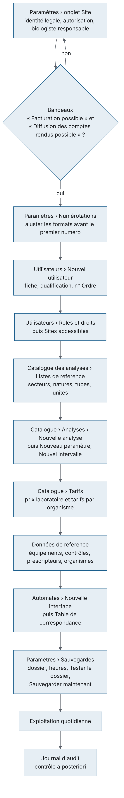
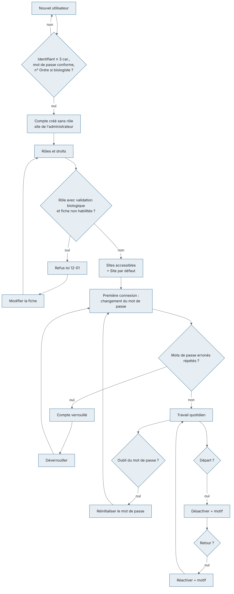
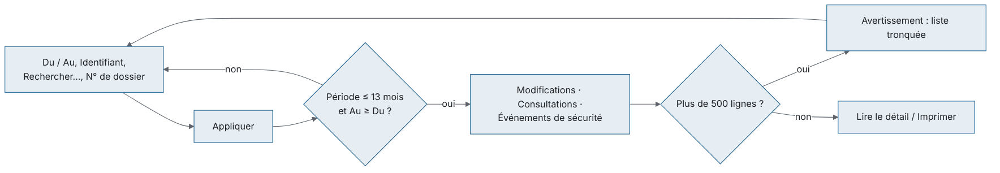
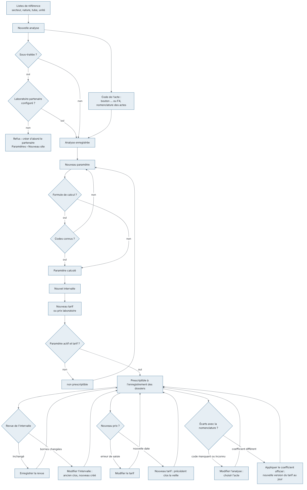
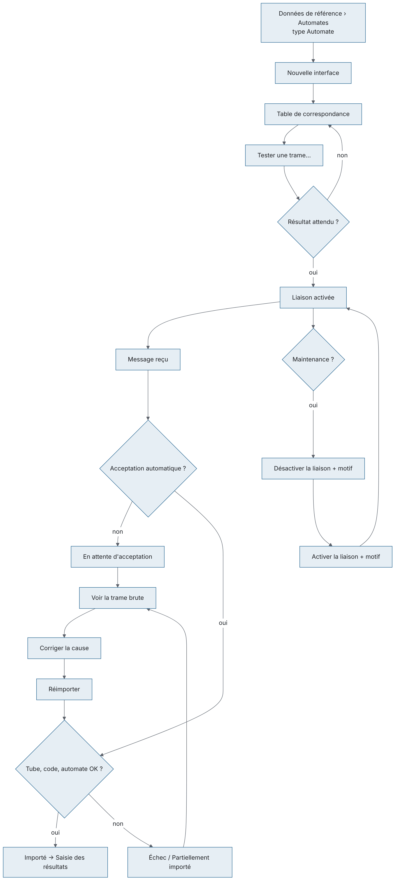
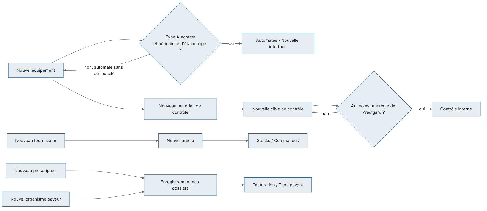
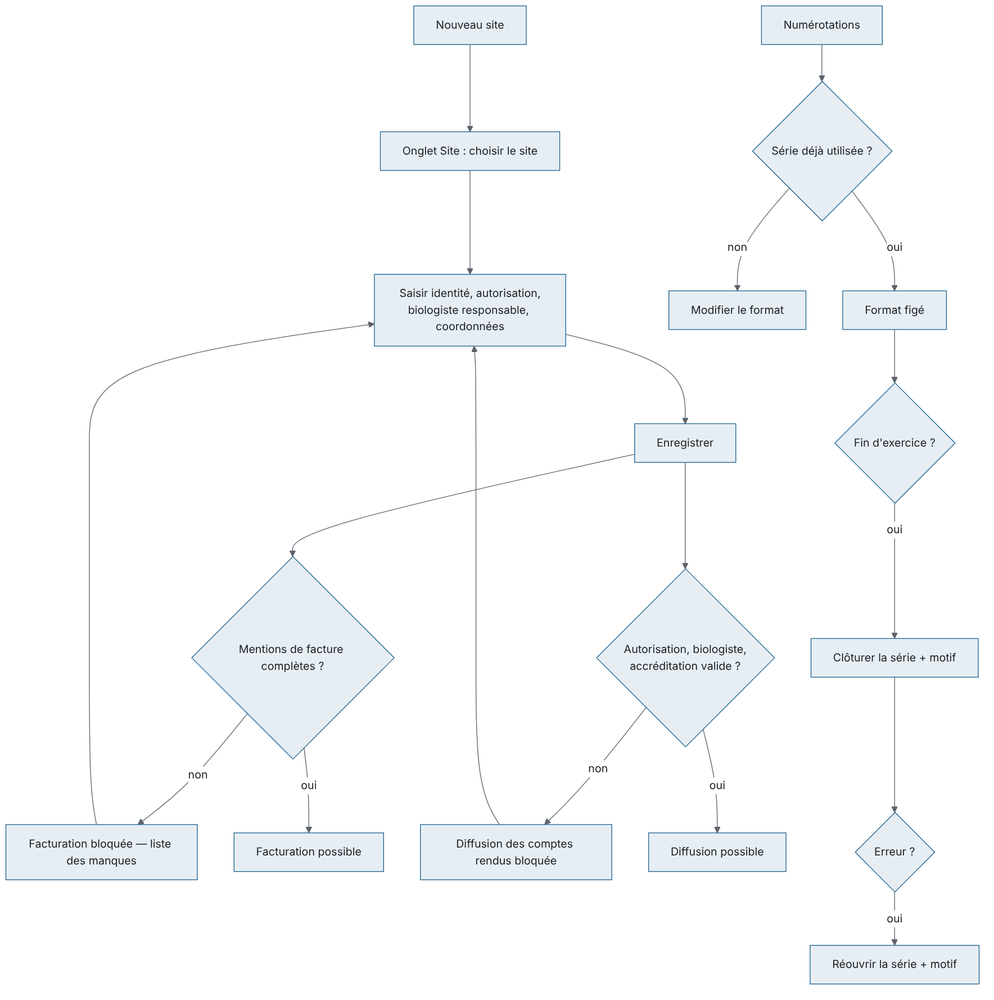
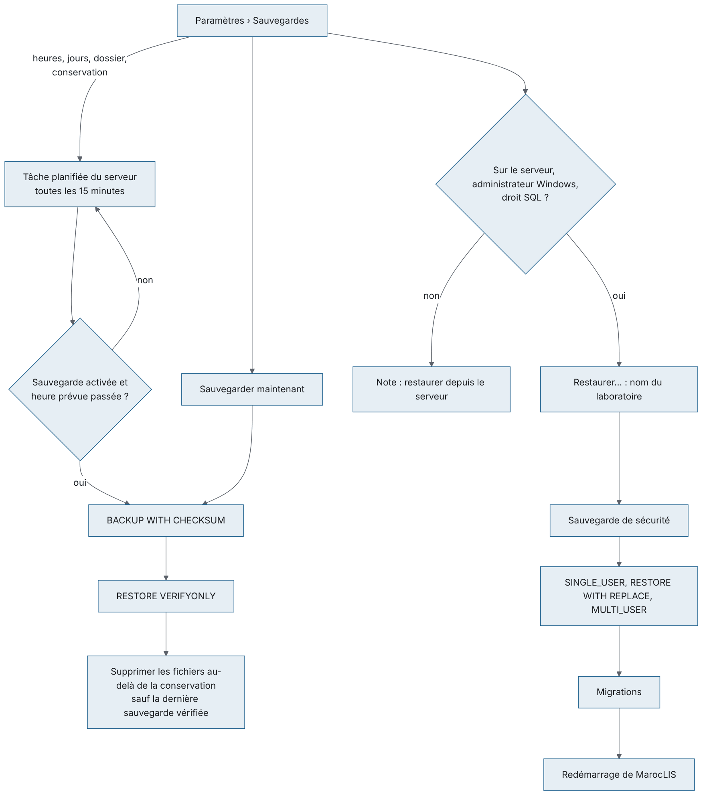
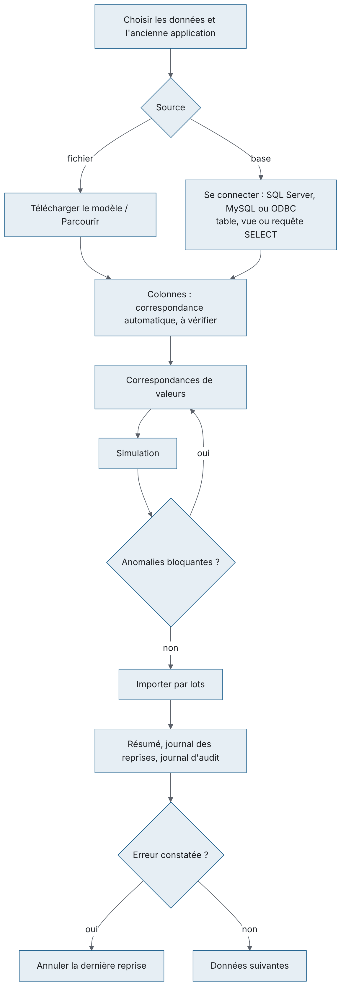

À quoi sert le module. Le groupe ADMINISTRATION du menu règle tout ce dont les autres écrans ont besoin pour fonctionner : - les comptes du personnel, leurs rôles, leurs droits et leurs sites ; - le journal d'audit (qui a fait quoi, qui a consulté quel dossier) ; - le catalogue des analyses : analyses, paramètres, valeurs usuelles, tarifs, profils, analyses en cascade, listes de référence, et la nomenclature officielle des actes de biologie médicale (NABM) ; - les liaisons avec les automates ; - les données de référence : équipements, contrôle interne, articles, fournisseurs, prescripteurs, organismes payeurs ; - les paramètres du laboratoire : identité du site, numérotations, paramètres généraux, format des factures, lieux de stockage des tubes, imprimantes du poste, licence ; - les sauvegardes de la base : planification, sauvegarde immédiate, restauration sur le serveur ; - la reprise des données de l'application utilisée avant MarocLIS (patients, prescripteurs, catalogue, antériorités, créances).
Qui l'utilise. L'administrateur règle presque tout. Le biologiste responsable tient le catalogue et les automates. Le responsable qualité tient les valeurs usuelles, les équipements et le contrôle interne, et lit le journal d'audit. Le service comptable tient les tarifs, les organismes payeurs, les articles et les fournisseurs. Le détail des droits est donné plus bas.
Ses écrans (groupe ADMINISTRATION du menu) :
| Menu | Ce qu'on y fait | Raccourci par défaut |
|---|---|---|
| Utilisateurs | Comptes, rôles et droits, sites accessibles, journal de sécurité | aucun (on peut en définir un) |
| Journal d'audit | Qui a modifié quoi, qui a consulté quel dossier, connexions | aucun |
| Catalogue des analyses | Analyses, paramètres, valeurs usuelles, tarifs, profils, analyses en cascade, listes de référence, nomenclature des actes et écarts | aucun |
| Automates | Liaisons avec les automates, table de correspondance, journal des messages | aucun |
| Données de référence | Équipements, contrôle interne, articles, fournisseurs, prescripteurs, organismes payeurs | aucun |
| Paramètres | Identité légale du site, numérotations, paramètres, format des factures, lieux de stockage, imprimantes du poste, sauvegardes de la base, licence | aucun |
| Reprise de données | Reprendre les données de l'ancienne application depuis un fichier Excel/CSV ou sa base, contrôlées avant import | aucun |
Le groupe n'apparaît que si vous avez le droit d'ouvrir au moins un de ces écrans. Une entrée pour laquelle vous n'avez pas le droit n'est pas affichée du tout.
Présentation commune des écrans. - En haut, le titre de l'écran et une phrase qui le résume (par exemple « Comptes, rôles et journal de sécurité — un compte se désactive, il ne se supprime jamais. »). - Dessous, des onglets plats, puis, dans chaque onglet, une rangée de recherche et de filtres et une ou plusieurs listes présentées en cartes. Les boutons d'une liste sont dans l'en-tête ou le pied de sa carte. - Une ligne d'état confirme ce qui vient d'être fait ou dit ce qui manque. - Un bouton que votre rôle ne permet pas d'utiliser est grisé.
Raccourcis valables sur tous ces écrans : F5 actualise l'écran, Ctrl+F place le curseur dans la zone de recherche, Ctrl+P (ou le bouton Imprimer en haut de la fenêtre) imprime la liste principale affichée, Ctrl+S déclenche le bouton Enregistrer visible, F1 ouvre l'aide de l'écran et Maj+F1 la liste des raccourcis. Dans toutes les fenêtres de saisie de ce chapitre, Entrée vaut Enregistrer et Échap vaut Annuler.
Liens avec les autres modules. - Le compte utilisateur (qualification, n° d'Ordre) conditionne la validation biologique dans Validation biologique et le choix du biologiste responsable du site. - Le catalogue alimente l'enregistrement des dossiers (analyses, profils, prix), la saisie des résultats (paramètres, limites, formules, cascades), le compte rendu (valeurs usuelles) et la facturation (tarifs, codes d'actes, coefficients). - Le site complet débloque la Facturation et la diffusion des Comptes rendus. Le format choisi dans l'onglet Factures est celui du bouton d'impression des factures. - Les lieux de stockage sont proposés à la Réception et à la Sérothèque. - Les automates déclarés dans Données de référence reçoivent leur liaison dans Automates ; leurs résultats arrivent dans Saisie des résultats ou au Contrôle interne.
L'ordre ci-dessous est celui qu'impose l'application : chaque étape a besoin de la précédente.

| Droit (tel qu'affiché dans l'arbre des droits) | Ce qu'il permet | Rôles livrés qui l'ont |
|---|---|---|
admin.users.view |
Ouvrir Utilisateurs (lecture) | Administrateur, Biologiste responsable, Responsable qualité |
admin.users.manage |
Créer, modifier, désactiver un compte, mot de passe, sites | Administrateur seul |
admin.roles.manage |
Attribuer des rôles, créer un rôle, modifier ses droits | Administrateur seul |
admin.audit.view |
Ouvrir Journal d'audit et l'onglet Journal de sécurité | Administrateur, Biologiste responsable, Responsable qualité |
catalog.view |
Ouvrir Catalogue des analyses | tous les rôles sauf Comptabilité et Prescripteur |
catalog.manage |
Analyses (dont leur code d'acte), paramètres, profils, cascades, listes de référence, prescripteurs | Administrateur, Biologiste responsable |
catalog.ranges.manage |
Valeurs usuelles (intervalles) et leur revue | Administrateur, Biologiste responsable, Responsable qualité |
billing.tariffs.manage |
Tarifs, prix du laboratoire, coefficient officiel, organismes payeurs | Administrateur, Comptabilité |
billing.payment.bounce |
Déclarer impayé un chèque ou un effet (Facturation › Plus d'actions) | Administrateur, Comptabilité |
instruments.view |
Ouvrir Automates | Administrateur, Biologiste responsable, Biologiste, Technicien de laboratoire, Responsable qualité |
instruments.configure |
Créer / modifier une interface et sa table de correspondance, tester une trame | Administrateur, Biologiste responsable |
instruments.control |
Activer / désactiver une liaison | Administrateur, Biologiste responsable, Technicien de laboratoire |
instruments.replay |
Réimporter une transmission (accepter une transmission retenue) | Administrateur, Biologiste responsable, Biologiste, Technicien de laboratoire |
admin.maintenance.run |
Purger le journal des messages automates | Administrateur seul |
admin.sites.manage |
Onglet Site des Paramètres, Nouveau site | Administrateur seul |
admin.settings.manage |
Numérotations, paramètres, format des factures, plafond des remises, lieux de stockage | Administrateur seul |
billing.discount.approve |
Approuver, sur place, une remise au-delà du plafond accordée par un autre utilisateur (jamais la sienne) | Administrateur, Biologiste responsable, Comptabilité |
admin.backup |
Onglet Sauvegardes des Paramètres : planifier la sauvegarde, Sauvegarder maintenant, Restaurer… (sur le serveur), avertissement d'une sauvegarde trop ancienne | Administrateur seul (accordé aussi aux installations existantes au démarrage) |
admin.license |
Onglet Licence des Paramètres : importer une licence, exporter la demande | Administrateur seul |
admin.migration |
Ouvrir Reprise de données : lire l'ancienne application, simuler, importer, annuler la dernière reprise | Administrateur seul (accordé aussi aux installations existantes au démarrage) |
results.validate_remote |
Validation à distance : se connecter au service de validation depuis un téléphone (exige aussi results.validate_biological) |
Aucun rôle livré (l'Administrateur a tous les droits mais ne peut pas valider sans qualification de biologiste) : à ajouter dans Rôles et droits au rôle des biologistes de garde |
Changements récents des rôles livrés :
- nouveau droit admin.backup (onglet Sauvegardes des Paramètres), donné à l'Administrateur, y compris sur une base existante au démarrage suivant ;
- nouveau droit admin.license (onglet Licence des Paramètres), donné à l'Administrateur, y compris sur une base existante au démarrage suivant ;
- nouveau droit results.validate_remote (validation à distance depuis un téléphone), donné à aucun rôle clinique : l'administrateur l'ajoute au rôle des biologistes concernés, ou crée un rôle « Biologiste de garde » (voir « Service de validation à distance ») ;
- nouveau droit billing.discount.approve (approuver une remise au-delà du plafond), donné à l'Administrateur, au Biologiste responsable et à la Comptabilité, y compris sur une base existante au démarrage suivant ; il peut être retiré ou ajouté à un rôle dans Rôles et droits ;
- le Biologiste et le Technicien de laboratoire peuvent maintenant Réimporter une transmission d'automate retenue (avant : biologiste responsable et administrateur seulement) ;
- le Biologiste peut retirer une validation et rééditer un compte rendu archivé ; le Secrétariat / accueil peut rééditer un compte rendu archivé (le compte rendu perdu est remis tel qu'il a été diffusé) ;
- Déclarer impayé a son propre droit, billing.payment.bounce, livré à la Comptabilité (ajouté à la mise à jour) et à l'Administrateur ; le Secrétariat / accueil garde l'encaissement et la clôture de sa propre caisse, mais voit Déclarer impayé grisé. Un rôle créé par le laboratoire qui doit déclarer des impayés doit recevoir ce droit dans Rôles et droits.
Attention (à vérifier avec votre organisation) : le rôle Comptabilité a le droit de gérer les tarifs mais pas celui d'ouvrir le Catalogue ; en pratique, seul l'administrateur peut saisir un tarif d'analyse avec les rôles livrés (voir la fiche de vérification).
À quoi sert cet écran
Gérer les comptes du personnel : - créer et modifier les comptes ; - leur donner des rôles et des sites ; - réinitialiser un mot de passe, déverrouiller, désactiver ou réactiver un compte ; - créer des rôles et choisir leurs droits ; - surveiller les connexions dans le journal de sécurité.
Un compte ne se supprime jamais : il signe le journal d'audit et les comptes rendus. On le désactive.
Qui y a accès : ouverture avec admin.users.view (administrateur, biologiste responsable, responsable qualité). Les boutons de modification des comptes demandent admin.users.manage, ceux des rôles admin.roles.manage : les deux ne sont livrés qu'à l'administrateur. Pour les autres, les boutons sont grisés et l'arbre des droits est en lecture seule. L'onglet Journal de sécurité n'apparaît que si vous avez admin.audit.view.
Fonctionnalités
Onglet Utilisateurs :
- Zone Rechercher… : filtre la liste quand on appuie sur Entrée.
- Case Inclure les comptes désactivés : ajoute les comptes désactivés à la liste.
- Nouvel utilisateur (au bout de la rangée de recherche ; admin.users.manage) : crée un compte.
- Modifier (au bout de la rangée ; admin.users.manage) : rouvre la fiche du compte sélectionné. Le double-clic sur la liste n'ouvre rien.
- Panneau de droite, pour le compte sélectionné :
- Rôles et droits (admin.roles.manage) : coche les rôles du compte ;
- Sites accessibles (admin.users.manage) : choisit les sites et le site par défaut ;
- Réinitialiser le mot de passe (admin.users.manage) : donne un mot de passe provisoire ;
- Déverrouiller (admin.users.manage) : actif seulement pour un compte actif verrouillé ou ayant des échecs de connexion ;
- Désactiver / Réactiver (admin.users.manage) : demande un motif ; grisé sur votre propre compte.
Onglet Rôles et droits :
- Nouveau rôle (pied de la liste des rôles ; admin.roles.manage) : demande un code puis une désignation française.
- Désactiver le rôle / Activer le rôle (pied de la liste ; admin.roles.manage) : grisé pour un rôle livré.
- Arbre des droits, groupés par module, avec des cases à cocher (lecture seule sans admin.roles.manage).
- Enregistrer les droits (admin.roles.manage) : enregistre les cases cochées, après confirmation.
Onglet Journal de sécurité : - Case N'afficher que l'utilisateur sélectionné : limite la liste au compte sélectionné dans l'onglet Utilisateurs. - Actualiser : relit les événements.
L'écran : en haut le titre « Utilisateurs » et la phrase « Comptes, rôles et journal de sécurité — un compte se désactive, il ne se supprime jamais. », puis trois onglets.
Scénarios
BIOCH, HEMA). Vide = tous les secteurs, à réserver au biologiste responsable.Le compte est créé sans rôle et avec accès au seul site de l'administrateur : enchaînez avec les scénarios 3 et 4.
Modifier une fiche : sélectionnez le compte, Modifier (le double-clic n'ouvre rien sur cette liste), corrigez, Enregistrer. L'identifiant et le mot de passe ne sont pas modifiables ici.
Attribuer ou retirer des rôles
Enregistrer. Seuls les rôles actifs sont proposés.
Définir les sites accessibles
Enregistrer.
Réinitialiser un mot de passe oublié
Le titulaire devra le changer à la prochaine connexion ; sa session ouverte est fermée.
Déverrouiller un compte (après plusieurs mots de passe erronés) : sélectionnez-le, Déverrouiller. Le mot de passe n'est pas changé.
Désactiver un départ / réactiver un retour : sélectionnez le compte, Désactiver (ou Réactiver), saisissez le motif obligatoire, validez. La sortie d'un salarié dans Dossiers du personnel désactive le compte lié le lendemain de sa date de sortie, dernier jour travaillé (aussitôt si la date de sortie est déjà passée ; sinon à la première connexion ou au contrôle de session qui suit ce lendemain), avec le motif au journal d'audit et une ligne « Compte désactivé » au Journal de sécurité. Le dernier administrateur n'est jamais désactivé ainsi. Une sortie annulée ou reportée avant d'être effective laisse le compte actif ; un compte déjà désactivé ne se réactive qu'ici (Réactiver). Un compte sans dossier du personnel se désactive toujours ici.
Créer un rôle : onglet Rôles et droits, Nouveau rôle, tapez le code (majuscules, sans espace) puis la désignation française. Le rôle est créé sans aucun droit : cochez ses droits dans l'arbre puis Enregistrer les droits.
Modifier les droits d'un rôle : sélectionnez le rôle, cochez / décochez dans l'arbre, Enregistrer les droits. Une confirmation indique le nombre de droits ajoutés et retirés et le nombre d'utilisateurs actifs concernés. Les rôles livrés sont modifiables.
Désactiver / réactiver un rôle créé par le laboratoire : sélectionnez-le, Désactiver le rôle (confirmation si des utilisateurs actifs l'ont) ou Activer le rôle. Impossible pour un rôle livré (bouton grisé).
Surveiller les connexions : onglet Journal de sécurité, éventuellement N'afficher que l'utilisateur sélectionné, Actualiser.
Créer le compte de service des automates : l'hôte des automates fonctionne sous un compte nommé interface. S'il manque, l'écran Automates l'indique (« Compte de service des automates introuvable. ») ; créez-le ici par Nouvel utilisateur avec l'identifiant interface (droits nécessaires : à vérifier).
Règles et contrôles
Flux : création du compte → rôles → sites accessibles → première connexion du titulaire avec changement obligatoire du mot de passe. Pour un biologiste, la fiche (qualification, n° d'Ordre, date) conditionne la validation biologique et le choix comme biologiste responsable du site dans Paramètres.

À quoi sert cet écran
Retrouver après coup : - qui a créé, modifié ou supprimé un enregistrement ; - qui a consulté quel dossier patient (et répondre à une demande d'accès d'un patient, loi 09-08) ; - les événements de sécurité (connexions, refus, changements de droits).
L'écran est en lecture seule : rien ne peut y être modifié ni effacé.
Qui y a accès : admin.audit.view (administrateur, biologiste responsable, responsable qualité).
Fonctionnalités - Du / Au : la période (ouverte par défaut sur les 30 derniers jours). - Identifiant : limite aux actions d'un compte. - Rechercher… : un mot à retrouver dans les lignes. - N° de dossier : limite l'onglet Consultations à un dossier patient. - Appliquer (ou Entrée dans une des zones) : relit les trois onglets avec ces filtres. - Onglets Modifications, Consultations, Événements de sécurité. - Cadre Détail de la ligne sélectionnée en bas : valeurs avant / après, motif, justification d'un accès dérogatoire. - Imprimer (Ctrl+P) : imprime la liste affichée.
L'écran : en haut le titre et le compteur de lignes (ou l'avertissement orange de liste tronquée) ; la rangée de filtres Du, Au, Identifiant, Rechercher…, N° de dossier et Appliquer ; les trois onglets ; en bas, le cadre de détail.
Scénarios
Règles et contrôles
Flux : écran de contrôle a posteriori, alimenté par tous les autres ; il ne transmet rien à un autre écran.

À quoi sert cet écran
Décrire ce que le laboratoire sait faire : - les analyses, leurs paramètres et leurs valeurs usuelles ; - les prix (tarifs par organisme et prix du laboratoire) ; - les profils (bilans) et les analyses en cascade ; - les listes de base (secteurs, natures de prélèvement, tubes, unités) ; - le lien de chaque analyse avec la nomenclature officielle des actes de biologie médicale (NABM), et le contrôle des écarts avec cette nomenclature.
Code interne et code NABM. Chaque analyse a deux codes :
- le Code : le code interne du laboratoire (ex. GLY, NFS). Il est saisi une seule fois à la création, mis en majuscules, et ne change plus jamais : les automates, les listes de travail et les résultats s'y réfèrent ;
- le Code de l'acte : le code de l'acte dans la nomenclature officielle (ex. B118). Il sert au remboursement (tiers payant, facture « cotation B »). Il se choisit dans la nomenclature, se corrige, et peut être vide pour une analyse hors nomenclature (non remboursée).
Plusieurs analyses peuvent citer le même acte. Le catalogue livré à l'installation (92 analyses et 11 bilans, voir Données livrées à l'installation au chapitre Prise en main) porte le code d'acte de chaque analyse qui correspond clairement à un acte, avec le coefficient officiel de cet acte. Les analyses facturées en plusieurs actes ou dont l'acte n'est pas évident restent sans code, à choisir par le laboratoire : bilan lipidique, transaminases, ionogramme, bandelette urinaire, ECBU, prélèvement vaginal, groupage, albuminémie (l'acte B101 vise la méthode immunologique) et vitamine D (deux actes possibles, B384 et B439). Leurs valeurs usuelles sont des valeurs indicatives de départ, à valider par le biologiste : elles portent la source « À vérifier par le laboratoire » jusqu'à la revue (scénario 13). Ce catalogue n'est créé que sur une base neuve : une base déjà en service garde le sien, sans ajout.
Qui y a accès : ouverture avec catalog.view (tous les rôles du personnel sauf Comptabilité). Création et modification des analyses (et de leur code d'acte), paramètres, profils, cascades et listes : catalog.manage (administrateur, biologiste responsable). Valeurs usuelles : catalog.ranges.manage (administrateur, biologiste responsable, responsable qualité). Tarifs, prix laboratoire et Appliquer le coefficient officiel : billing.tariffs.manage (administrateur ; la Comptabilité a ce droit mais n'ouvre pas cet écran). Les boutons non autorisés sont grisés.
Fonctionnalités
Onglet Analyses :
- Zone Code, nom ou synonyme de l'analyse : filtre la liste quand on appuie sur Entrée.
- Liste Tous les secteurs : limite à un secteur.
- Pastilles Toutes · N et À compléter · N : « À compléter » ne garde que les analyses non prescriptibles (sans tarif ou sans paramètre actif) ou dont une tranche d'âge a une unité à confirmer.
- Case Inclure les entrées désactivées (cochée par défaut).
- Nouvelle analyse (en-tête de la liste ; catalog.manage) et Modifier l'analyse (ou double-clic).
- Nouveau paramètre et Modifier le paramètre (ou double-clic) pour l'analyse sélectionnée (catalog.manage).
- Nouvel intervalle, Modifier l'intervalle (ou double-clic) et Enregistrer la revue pour le paramètre sélectionné (catalog.ranges.manage).
Onglet Tarifs (tarifs de l'analyse sélectionnée dans l'onglet Analyses) :
- Nouveau tarif et Modifier le tarif (ou double-clic) (billing.tariffs.manage).
Onglet Profils :
- Nouveau profil et Modifier le profil (ou double-clic) (catalog.manage).
Onglet Analyses en cascade :
- Nouvelle règle en cascade et Modifier la règle (ou double-clic) (catalog.manage).
Onglet Listes de référence :
- Choix de la liste : Secteurs techniques, Natures de prélèvement, Types de tube, Unités de mesure.
- Ajouter et Modifier (ou double-clic) (catalog.manage).
Onglet Nomenclature des actes (lecture seule) : - Zone « Code (B118, 118) ou libellé de l'acte… » : filtre en direct, sans tenir compte des accents. - Pastilles Tous, 2005, 2012, 2016, chacune avec son nombre d'actes : limite aux actes d'un arrêté.
Onglet Écarts avec la nomenclature :
- Pastilles Tous, Code manquant, Code inconnu, Coefficient différent, chacune avec son nombre.
- Modifier l'analyse (ou double-clic ; catalog.manage) : ouvre la fiche de l'analyse de la ligne pour choisir ou corriger son code d'acte.
- Appliquer le coefficient officiel (bouton principal ; billing.tariffs.manage) : actif seulement sur une ligne « Coefficient différent ».
Fenêtre de l'analyse : - Bouton … à côté de Code de l'acte, ou F4 dans la case : ouvre la fenêtre « Nomenclature des actes de biologie médicale » pour choisir l'acte.
Après la correction d'une ligne d'écart, la ligne voisine devient la ligne courante : on corrige les analyses l'une après l'autre.
L'écran : en haut le titre « Catalogue des analyses » et la phrase « Analyses, tarifs, profils, règles réflexes et listes de référence. », puis sept onglets et une ligne d'état en bas.
Scénarios
Ajoutez au moins un paramètre et un tarif : sans eux l'analyse reste « non prescriptible ».
Marquer une analyse comme sous-traitée : dans la fiche, cochez Sous-traitée puis choisissez le Laboratoire partenaire. La liste ne propose que les sites de type « Laboratoire correspondant » ; s'il n'y en a aucun, l'enregistrement est refusé (« Aucun laboratoire partenaire n'est configuré… »). Créez-le d'abord dans Paramètres › Nouveau site.
Modifier une analyse : sélectionnez-la, Modifier l'analyse (ou double-clic). La fenêtre s'ouvre sur toute la fiche enregistrée ; le Code interne reste celui créé par le laboratoire (il ne change jamais). Un champ que la fenêtre ne montre pas (les jours d'exécution) est gardé tel quel.
Lier une analyse à un acte de la nomenclature
Vous pouvez aussi taper le code à la main (il est mis en majuscules, les espaces sont retirés). Un code qui ne figure pas dans la nomenclature est signalé en rouge (« Le code … ne figure pas dans la nomenclature des actes. ») et demande une confirmation à l'enregistrement.
Créer un code interne pour une analyse hors nomenclature : créez l'analyse comme au scénario 1 avec votre propre Code et laissez Code de l'acte vide. L'analyse est facturée au prix du laboratoire, sans remboursement. Elle apparaît dans l'onglet Écarts avec la nomenclature comme « Code manquant » : c'est normal pour une analyse hors nomenclature.
Contrôler le catalogue contre la nomenclature
« Coefficient différent » : un tarif en vigueur n'a pas le coefficient officiel de l'acte. Voir le scénario 7.
Aligner un tarif sur le coefficient officiel
L'opération est tracée au journal d'audit avec les coefficients remplacés. La ligne voisine devient la ligne courante.
Ajouter un paramètre
Cases interne (non imprimé), Toujours porter au compte rendu, Actif ; Enregistrer.
Créer un paramètre calculé : dans le paramètre (type numérique), remplissez Formule de calcul en citant les autres paramètres de la même analyse entre crochets, par ex. [CHOL] - [HDL] - [TG]/5. Un code inconnu est signalé avant l'enregistrement.
Modifier un paramètre : Modifier le paramètre (ou double-clic). La fenêtre s'ouvre sur tout le paramètre enregistré, réponses autorisées comprises. Le type est figé dès qu'un résultat existe (le nombre de résultats est affiché).
Saisir des valeurs usuelles
Réviser un intervalle : Modifier l'intervalle, changez les bornes, Enregistrer. Si l'intervalle est en vigueur, l'ancien est clos la veille et un nouveau est créé (« Intervalle révisé : le précédent a été clos et reste consultable. »).
Enregistrer une revue périodique sans changement (ISO 15189) : sélectionnez l'intervalle, Enregistrer la revue, complétez la source si besoin, confirmez avec Enregistrer la revue. La revue est datée du jour. Les intervalles jamais revus ou revus il y a plus de 3 ans sont marqués « revue à faire ».
Réviser un prix (nouvelle valeur du B, nouveau tarif d'organisme)
Corriger une faute de frappe sur un tarif : onglet Tarifs, sélectionnez le tarif, Modifier le tarif (ou double-clic). Seuls prix, coefficient, lettre-clé, valeur et TVA changent ; organisme et dates restent. Les dossiers déjà facturés gardent leur prix.
Créer ou modifier un profil (bilan) : onglet Profils, Nouveau profil / Modifier le profil ; Code, désignations, Synonymes de recherche, Prix forfaitaire (facultatif), cases Détailler sur la facture (à garder pour le tiers payant), Regrouper sur le compte rendu, Actif ; cochez les analyses et, si besoin, facultative ; Enregistrer. Le total du détail et le forfait s'affichent. Attention : en modification, les Synonymes de recherche s'ouvrent vides et sont effacés si on ne les ressaisit pas.
Créer une analyse en cascade (réflexe) : onglet Analyses en cascade, Nouvelle règle en cascade ; Analyse du déclencheur, Paramètre déclencheur, Condition (Supérieur à, Inférieur à, Dans l'intervalle, Hors intervalle, Réponse codée égale à) avec Seuil / Seuil supérieur / Réponse déclenchante ; Analyse ajoutée ; Description (français) obligatoire ; Ajouter sans confirmation (sinon le biologiste valide la proposition), Acte facturable, Actif ; Enregistrer.
Gérer les listes de référence : onglet Listes de référence, choisissez la liste, Ajouter ou Modifier. Secteur : ordre, Dans le périmètre d'accréditation. Nature de prélèvement : Jeûne requis (h), Consignes de prélèvement, Consignes remises au patient. Type de tube : Couleur du bouchon (#RRGGBB), Additif / anticoagulant, Ordre de prélèvement (obligatoire), volumes, « à l'abri de la lumière », « transport sous glace ». Unité : Symbole, Symbole (arabe), Code UCUM, Facteur vers l'unité SI et Unité SI (l'un ne va pas sans l'autre).
Désactiver une analyse, un paramètre, une entrée de liste : décochez Actif et enregistrez (rien ne se supprime).
Règles et contrôles
Flux : catalogue → enregistrement des dossiers (choix des analyses et des profils, prix) → saisie des résultats (paramètres, limites, formules, cascades) → validation et compte rendu (valeurs usuelles, mention d'accréditation) → facturation (tarifs, code de l'acte et coefficient sur la facture « cotation B » et au tiers payant). Une analyse sous-traitée part vers l'écran Sous-traitance.

À quoi sert cet écran
Relier les automates au LIS : - configurer la liaison (protocole, liaison série, réseau ou dossier de fichiers) ; - traduire les codes de l'automate en paramètres du catalogue ; - tester une trame sans rien enregistrer ; - surveiller les messages reçus, réimporter ceux qui ont échoué ou qui sont retenus, et purger le journal.
Qui y a accès : ouverture avec instruments.view (administrateur, biologistes, technicien, responsable qualité). Création / modification / table de correspondance / test de trame : instruments.configure (administrateur, biologiste responsable ; le test demande aussi le droit de voir les résultats). Activer / désactiver une liaison : instruments.control (administrateur, biologiste responsable, technicien). Réimporter : instruments.replay (administrateur, biologiste responsable, biologiste, technicien). Voir la trame brute : droit de voir les résultats. Purger le journal : admin.maintenance.run (administrateur).
Fonctionnalités
- Actualiser (en-tête) : relit les liaisons et le journal. L'état de l'hôte se met aussi à jour seul toutes les quelques secondes.
- Carte Liaisons :
- Nouvelle interface (instruments.configure) : crée la liaison d'un automate qui n'en a pas encore ;
- Désactiver la liaison / Activer la liaison (instruments.control) : demande un motif ;
- Modifier l'interface (ou double-clic ; instruments.configure).
- Carte Correspondances (de la liaison sélectionnée) :
- Table de correspondance (instruments.configure) : fenêtre avec Ajouter des paramètres…, Tout cocher, Ajouter à la correspondance, Retirer la ligne et Enregistrer ;
- Tester une trame… (instruments.configure et lecture des résultats) : fenêtre avec Charger la dernière trame reçue, Analyser la trame et, pour une liaison COBAS INTEGRA, Exemple de trame.
- Carte Journal des messages :
- Voir la trame brute (ou double-clic ; lecture des résultats) ;
- Purger le journal (admin.maintenance.run) ;
- Réimporter (instruments.replay) : actif seulement sur une ligne Échec, Partiellement importé ou En attente d'acceptation.
L'écran : en haut le titre « Automates », l'état de l'hôte des automates (actif avec le nombre de liaisons en service et en défaut, en défaut, ou « Ce poste ne pilote pas les automates… ») et Actualiser. Trois cartes :
Scénarios
Laissez acceptation automatique décochée au départ ; cochez Liaison activée si vous voulez qu'elle tourne ; Enregistrer. La prise en compte par l'hôte se fait en quelques secondes.
Déclarer un Roche cobas INTEGRA 400 plus : voir plus bas Interface COBAS INTEGRA 400 plus (préréglage, numéros de test de la table, essai avec Exemple de trame).
Remplir la table de correspondance : sélectionnez la liaison, Table de correspondance, Ajouter des paramètres…, tapez un code d'analyse (ex. NFS) ou de paramètre, cochez (ou Tout cocher), Ajouter à la correspondance ; pour chaque ligne saisissez le Code automate, éventuellement Unité automate, Facteur et Décalage de conversion, Réponses codées ; Retirer la ligne si besoin ; Enregistrer. Une ligne retirée qui a déjà servi est conservée, désactivée.
Tester une trame
Fermer. Rien n'est enregistré : l'écran montre ce que le LIS ferait de chaque résultat.
Activer l'acceptation automatique : Modifier l'interface, cochez acceptation automatique, confirmez. Refusé tant que la table de correspondance est vide.
Couper une liaison (automate en maintenance) : sélectionnez-la, Désactiver la liaison, motif obligatoire. Activer la liaison pour la remettre, avec motif.
Traiter une transmission retenue ou en échec : dans le Journal des messages, lisez Anomalies ; Voir la trame brute pour le texte exact ; corrigez la cause (tube pas encore réceptionné, code inconnu à ajouter, automate remis en service, étalonnage enregistré…) ; puis Réimporter, confirmez. Le nombre de valeurs enregistrées est affiché. Sans acceptation automatique, c'est aussi ainsi que le technicien ou le biologiste accepte une transmission « En attente d'acceptation ».
Purger le journal des messages : Purger le journal ; l'application annonce combien de trames seront supprimées et combien sont gardées parce que encore réimportables ; confirmez, saisissez le motif.
Règles et contrôles
Flux : Données de référence (automate) → Automates (liaison, correspondances) → messages reçus → résultats dans Saisie des résultats (ou contrôles dans le Contrôle interne) → validation.

L'automate Roche COBAS INTEGRA 400 plus a son propre protocole (pas ASTM). C'est le LIS qui l'interroge : il demande les résultats et les tubes sans demande, puis envoie la liste de travail. Ce qui suit est la description complète ; le chapitre Phase analytique et comptes rendus (Résultats reçus des automates) y renvoie.
Préréglage. Dans la fenêtre de l'interface (Nouvelle interface ou Modifier l'interface), cadre Format des messages, choisissez le Profil fabricant « Roche cobas INTEGRA 400 plus » (choisir le protocole « Roche COBAS INTEGRA » fait de même). Il règle d'un coup :
| Réglage | Valeur |
|---|---|
| Protocole | Roche COBAS INTEGRA |
| Liaison physique | Série (RS-232) |
| Sens | Envoi de la liste de travail |
| Débit, bits de données, parité, bits d'arrêt | 9600, 8, Aucune, 1 |
| Contrôle de flux | Xon/Xoff |
| Encodage | ASCII |
| Délai d'acquittement / tentatives | 180 s / 3 |
Table de correspondance. Pour l'INTEGRA, le Code automate est le numéro de test de l'application Roche, de 1 à 999. « 031 », « 31 » et « 0-031 » (l'écriture des documents Roche) désignent le même test : il est demandé à l'automate sous cette forme et le résultat qui revient en « 031 » retrouve sa ligne, quelle que soit l'écriture choisie dans la table. À l'enregistrement de la table : - un code actif qui n'est pas un numéro de test (« GLUC3 », « 0-0?? ») est refusé : « « … » n'est pas un numéro de test COBAS INTEGRA : saisissez le numéro du test (1 à 999), par exemple « 031 » ou « 0-031 ». » ; - un même numéro écrit deux fois (« 31 » et « 031 ») est refusé : « Deux correspondances portent le même code automate. »
Exemple de la base de démonstration (interface DEMO-INTEGRA, applications sérum/plasma) :
| N° de test | Paramètre | N° de test | Paramètre | N° de test | Paramètre |
|---|---|---|---|---|---|
| 031 | GLY (glucose) | 297 | BILT (bilirubine totale) | 596 | FER |
| 003 | UREE | 735 | BILD (bilirubine directe) | 609 | AMY (amylase) |
| 445 | CREAT (Jaffé compensé) | 615 | AU (acide urique) | 052 | LIP (lipase) |
| 586 | CHOL | 042 | CA (calcium) | 323 | CK |
| 010 | TG | 614 | PHOS | 607 | LDH |
| 494 | ASAT | 059 | MG | 501 | NA (ISE indirecte) |
| 495 | ALAT | 592 | ALB | 502 | K |
| 551 | PAL | 027 | PROT (protéines totales) | 503 | CL |
| 498 | GGT |
Exemple de trame. Dans Tester une trame…, le bouton Exemple de trame (seulement pour une liaison INTEGRA) fabrique une trame INTEGRA pour le tube de la dernière transmission (sinon un tube fictif « TUBE-0001 », que le test montre comme tube inconnu) avec jusqu'à trois numéros de test actifs de la table, et l'analyse aussitôt.
Mettre en service un INTEGRA 1. Nouvelle interface, choisissez l'automate. 2. Profil fabricant « Roche cobas INTEGRA 400 plus » ; saisissez le Port série ; vérifiez le débit sur l'automate. 3. Enregistrer, puis Table de correspondance : un numéro de test par paramètre ; Enregistrer. 4. Tester une trame… › Exemple de trame : chaque ligne doit trouver son paramètre ; une ligne « code inconnu » signale un numéro absent de la table. 5. Laissez l'acceptation automatique décochée tant que les premiers résultats réels n'ont pas été contrôlés au Journal des messages.
À quoi sert cet écran
Tenir à jour les fichiers de base des autres modules : - les équipements et automates ; - les matériaux et cibles du contrôle interne ; - les articles de stock et les fournisseurs ; - les prescripteurs ; - les organismes payeurs.
Qui y a accès : l'entrée apparaît si vous avez au moins un de ces droits : gestion des équipements (administrateur, biologiste responsable, responsable qualité), règles de contrôle qualité (mêmes rôles), gestion des commandes (administrateur, comptabilité), catalog.manage (administrateur, biologiste responsable), gestion des tarifs (administrateur, comptabilité). Chaque onglet n'est modifiable qu'avec son droit ; les boutons sont grisés sinon.
Fonctionnalités - Case Inclure les comptes désactivés (en-tête) : ajoute les entrées désactivées à toutes les listes. - Ligne d'état (en-tête) : « Données de référence complètes : tous les écrans sont exploitables. » ou « Écrans encore inexploitables faute de données de référence — … » suivi des écrans concernés. - Un bouton de création et un bouton Modifier par onglet :
| Onglet | Boutons | Droit pour modifier |
|---|---|---|
| Automates (tous les équipements) | Nouvel équipement, Modifier | gestion des équipements |
| Contrôle interne (matériaux, puis cibles du matériau sélectionné) | Nouveau matériau de contrôle, Modifier ; Nouvelle cible de contrôle, Modifier | règles de contrôle qualité |
| Articles | Nouvel article, Modifier | gestion des commandes |
| Fournisseurs | Nouveau fournisseur, Modifier | gestion des commandes |
| Prescripteurs (zone Rechercher…, Entrée) | Nouveau prescripteur, Modifier | catalog.manage |
| Organismes payeurs | Nouvel organisme payeur, Modifier (ou double-clic) | gestion des tarifs |
L'écran : en haut le titre « Données de référence », la ligne d'état et la case Inclure les comptes désactivés ; puis six onglets. Chaque onglet a une liste en carte avec ses boutons dans l'en-tête ; certains ont une note (périodicités des équipements, cible du contrôle interne, évaluation des fournisseurs, taux des organismes payeurs). L'onglet Contrôle interne montre les matériaux en haut et, en bas, les cibles du matériau sélectionné.
Scénarios
Règles et contrôles
Flux : ces fichiers alimentent Équipements et Automates, le Contrôle interne, les Stocks et Commandes, l'enregistrement des dossiers (prescripteur, organisme) et la Facturation / Tiers payant.

À quoi sert cet écran
Régler ce qui est propre au laboratoire : - l'identité légale de chaque site, son autorisation, son biologiste responsable et son logo ; créer un nouveau site ; - les numérotations (dossiers, factures, reçus, bordereaux…) ; - les paramètres généraux ; - le format d'impression des factures patients ; - les lieux de stockage des tubes ; - les imprimantes du poste.
Qui y a accès : l'entrée apparaît avec admin.sites.manage, admin.settings.manage ou admin.license (livrés à l'administrateur seul). Onglet Site et Nouveau site modifiables avec admin.sites.manage ; onglets Numérotations, Paramètres et Factures modifiables avec admin.settings.manage. L'onglet Lieux de stockage n'apparaît qu'avec admin.settings.manage. L'onglet Imprimantes concerne le poste sur lequel vous êtes. L'onglet Sauvegardes n'apparaît qu'avec admin.backup (voir « Sauvegardes » plus bas). L'onglet Licence n'apparaît qu'avec admin.license (voir « Licence » plus bas).
Fonctionnalités
Onglet Site :
- Liste du site à afficher (code — raison sociale).
- Nouveau site (à côté de la liste ; admin.sites.manage) : crée un site ou un laboratoire partenaire.
- Choisir le logo… et Retirer le logo (admin.sites.manage).
- Enregistrer (admin.sites.manage) et Actualiser, au pied de la fiche.
Onglet Numérotations :
- Modifier le format (admin.settings.manage) : seulement pour une série au statut « Modifiable ».
- Valeur de départ (admin.settings.manage) : le prochain numéro de la série. Libre avant le premier numéro ; ensuite seulement vers l'avant pour les dossiers et les autres séries ; jamais pour les factures et les avoirs une fois utilisés.
- Clôturer la série / Réouvrir la série (admin.settings.manage) : demande un motif.
Onglet Paramètres :
- Modifier et Nouveau (admin.settings.manage).
Onglet Factures :
- Liste Format par défaut des factures patients.
- Cases Options du format existant et Options du format cotation B.
- Plafond des remises : Pourcentage maximal du brut (%) et Montant maximal (DH) (admin.settings.manage).
- Enregistrer (admin.settings.manage) et Actualiser.
Onglet Lieux de stockage : - Ajouter : demande le nom du nouveau lieu. - Renommer (ou double-clic) : demande le nouveau nom. - Désactiver / Réactiver : retire le lieu des listes (ou l'y remet).
Onglet Imprimantes : - Listes des deux imprimantes, case d'impression directe, Enregistrer, Imprimer une étiquette de test, Actualiser.
L'écran : en haut le titre « Paramètres » et la phrase « Identité du laboratoire, numérotations, paramètres, lieux de stockage et imprimantes de ce poste. », puis six onglets. En arabe, les fiches des onglets Site, Factures et Imprimantes sont inversées : chaque champ est à droite, sous son libellé, et les cases à cocher précèdent le champ qu'elles commandent.
Scénarios
Enregistrer. L'enregistrement est accepté même incomplet ; les bandeaux disent ce qui bloque encore. Quand tout est complet : « Configuration complète : la facturation et la diffusion des comptes rendus sont débloquées. »
Désigner le biologiste responsable : la liste ne propose que les comptes actifs habilités à valider (biologiste avec n° d'Ordre). Créez ou complétez d'abord la fiche dans Utilisateurs.
Déclarer l'accréditation : cochez Site accrédité (ISO 15189), saisissez N° d'accréditation (obligatoire) et Accréditation valable jusqu'au, Enregistrer. Une accréditation expirée bloque la diffusion.
Mettre le logo : Choisir le logo… (PNG, JPG, BMP), puis Enregistrer ; Retirer le logo puis Enregistrer pour l'enlever. Le logo est imprimé en tête des comptes rendus et des factures.
Créer un nouveau site ou un laboratoire partenaire
Pour un site de travail, donnez ensuite l'accès aux utilisateurs dans Utilisateurs › Sites accessibles. Un partenaire n'est jamais proposé à la connexion ni dans les accès des utilisateurs ; il devient choisissable comme Laboratoire partenaire dans la fiche d'une analyse sous-traitée.
Ajuster le format d'une numérotation avant le premier numéro : onglet Numérotations, sélectionnez une série au statut « Modifiable », Modifier le format, saisissez le format avec les jetons {SITE}, {YEAR}, {YY}, {MM}, {SEQ:n} (n = nombre de chiffres ; {SEQ} obligatoire), validez. Le Prochain numéro affiche le résultat.
Fixer la valeur de départ (après une reprise de données, pour ne pas reprendre les numéros de l'ancienne application) : sélectionnez la série, Valeur de départ, tapez le prochain numéro (par exemple 50001), validez. Le préfixe se règle avec Modifier le format (par exemple ML{YY}-{SEQ:6}). Une série de dossiers déjà utilisée ne peut qu'avancer ; une série de factures ou d'avoirs déjà utilisée est figée (série chronologique ininterrompue).
Clôturer une série en fin d'exercice : sélectionnez la série, Clôturer la série, motif obligatoire. Plus aucun document ne peut y être numéroté. Réouvrir la série (motif obligatoire) en cas d'erreur.
Modifier un paramètre : onglet Paramètres, sélectionnez la ligne, Modifier, saisissez la valeur. Nouveau crée un paramètre (clé puis valeur), valable pour toute l'installation. Les messages aux patients et les coûts du pilotage se règlent sur leurs propres écrans.
Choisir le format des factures patients
9 bis. Régler le plafond des remises
1. Onglet Factures, partie Plafond des remises.
2. Pourcentage maximal du brut (%) : de 0 à 100 (10 par défaut ; 100 revient à ne pas plafonner en pourcentage).
3. Montant maximal (DH) : un montant, ou vide pour ne pas plafonner en dirhams.
4. Enregistrer (le même bouton enregistre le format des factures et le plafond). Le plafond appliqué à une facture est le plus bas des deux : 10 % d'une facture de 747,00 DH = 74,70 DH ; avec un maximum de 50 DH, le plafond est 50,00 DH.
5. Au-delà, la fenêtre Émettre la facture demande l'identifiant et le mot de passe d'un autre utilisateur ayant billing.discount.approve (voir Facturation › Remise au-delà du plafond). Le changement de plafond est tracé au journal d'audit (« Plafond des remises modifié : 10 % du brut, montant maximal aucun »).
Gérer les lieux de stockage des tubes
Choisir les imprimantes de ce poste : onglet Imprimantes, choisissez l'imprimante A4 et l'imprimante d'étiquettes (ou « Aucune : étiquettes en PDF »), cochez au besoin l'impression directe, Enregistrer ; Imprimer une étiquette de test pour vérifier. Actualiser relit les imprimantes installées.
Règles et contrôles
2610-000123 pour un dossier, ST/2026/00012 pour un bordereau), mais deux sites ne peuvent plus produire le même numéro ; dans l'onglet Numérotations, ces séries apparaissent sans site (« — »). Les factures, avoirs, reçus et bordereaux de tiers payant restent numérotés par site.Flux : Paramètres (site complet) → débloque Facturation et la diffusion dans Comptes rendus ; numérotations → numéros de dossier à l'enregistrement, factures, bordereaux ; format des factures → impression des factures patients ; lieux de stockage → Réception et Sérothèque ; imprimantes → étiquettes au Prélèvement et documents A4.

À quoi sert cet onglet
L'onglet Sauvegardes de Paramètres règle et surveille la sauvegarde de la base de données du laboratoire : - la sauvegarde automatique : activée ou non, ses heures, ses jours, le dossier où elle est écrite et combien de jours elle est conservée ; - la liste des sauvegardes : date, origine (qui ou quoi l'a faite), taille, état de vérification, nom du fichier ; - Sauvegarder maintenant : une sauvegarde immédiate, par exemple avant une mise à jour ou une grosse reprise de données ; - Restaurer… : remplacer toute la base par une sauvegarde, sur le serveur seulement.
La sauvegarde est faite par SQL Server lui-même (BACKUP DATABASE … WITH CHECKSUM), base ouverte : les autres postes continuent de travailler pendant qu'elle s'écrit. Chaque sauvegarde est ensuite relue (RESTORE VERIFYONLY) ; une sauvegarde non relue n'est pas une sauvegarde sur laquelle compter.
Qui y a accès : le droit admin.backup, livré à l'administrateur seul (et accordé au rôle Administrateur d'une installation existante au démarrage qui suit la mise à jour). Sans ce droit, l'onglet n'apparaît pas. L'onglet se règle depuis n'importe quel poste ; la restauration ne se fait que sur le serveur (voir plus bas). Tout l'onglet, comme la sauvegarde automatique du serveur, reste utilisable quand MarocLIS est en lecture seule faute de licence valide (voir « Licence » plus bas).
Comment fonctionne la sauvegarde automatique. SQL Server Express n'a pas d'agent de planification. L'installation serveur de MarocLIS crée donc dans Windows une tâche planifiée, MarocLIS - Sauvegarde, qui tourne sous le compte SYSTEM toutes les 15 minutes et au démarrage du serveur. À chaque passage, elle lit les réglages de cet onglet dans la base et ne sauvegarde que si une heure prévue est passée depuis sa dernière sauvegarde. Conséquences :
- un réglage changé dans l'onglet est pris en compte au plus tard 15 minutes après, sans toucher au Planificateur de tâches ;
- un serveur éteint à l'heure prévue rattrape la sauvegarde à son redémarrage, une seule fois, si l'heure manquée date de moins de 24 heures ;
- la tâche écrit son passage dans la base : l'onglet affiche « Tâche planifiée active sur … (dernier passage : …) », ou un avertissement si elle ne s'est plus manifestée depuis plus d'une heure ;
- la tâche supprime les sauvegardes plus anciennes que la durée de conservation, mais jamais la dernière sauvegarde vérifiée, même ancienne ; elle ne supprime que les fichiers qu'elle reconnaît comme les siens (MarocLIS_AAAAMMJJ_HHMMSS….bak) ;
- elle tient un journal mensuel dans Sauvegarde\logs du dossier d'installation sur le serveur.
Fonctionnalités
Carte Sauvegarde automatique :
- Sauvegarde automatique activée : décochée, plus aucune sauvegarde planifiée ; Sauvegarder maintenant reste possible.
- Heures (HH:mm, séparées par des virgules) : une ou plusieurs heures par jour, 6 au plus (par défaut 22:00). Exemple : 13:00, 22:00 pour une sauvegarde à la pause de midi et une le soir.
- Jours : les jours de la semaine où la sauvegarde a lieu (tous cochés par défaut).
- Conservation (jours) : de 1 à 365 jours (14 par défaut).
- Dossier de sauvegarde (sur le serveur) : un chemin complet tel que SQL Server le voit sur le serveur (D:\Sauvegardes\MarocLIS), ou un partage réseau (\\nas\maroclis). Jamais une lettre de lecteur réseau : un service Windows n'en a pas.
- Tester le dossier : SQL Server écrit un petit fichier de test dans le dossier, avec son propre compte de service. Si SQL Server ne peut pas y écrire, le message le dit et donne la réponse de SQL Server.
- Enregistrer : un nouveau dossier est d'abord testé de la même façon. S'il échoue, MarocLIS propose de l'enregistrer quand même : utile pour un dossier local qui n'existe pas encore, que la tâche du serveur crée à son prochain passage en donnant au compte de SQL Server le droit d'y écrire. Le changement est inscrit au journal de sécurité (« Paramètres de sauvegarde modifiés »).
- Actualiser : relit l'état et la liste.
Sous la carte, trois lignes d'état : - la dernière sauvegarde réussie et son âge (bandeau rouge si elle a plus de 48 heures ou s'il n'y en a aucune) ; - l'état de la tâche planifiée et la prochaine sauvegarde automatique (ou « Sauvegarde automatique désactivée ») ; - le résultat de la dernière tentative, réussie ou en échec avec sa raison.
Carte Sauvegardes de la base : - la liste des sauvegardes de la durée de conservation plus une semaine, la plus récente en haut : Date, Origine (« Automatique — » suivi du nom du serveur, « Manuelle — Par … (…) depuis … », « Avant restauration — … », « Autre outil » pour une sauvegarde faite par exemple avec SQL Server Management Studio), Taille, Vérification (Vérifiée, À vérifier, Vérification échouée, Non vérifiée, Endommagée), Fichier ; - Sauvegarder maintenant : sauvegarde immédiate dans le dossier réglé ; une barre de progression tourne pendant l'écriture, puis la ligne d'état dit « Sauvegarde terminée et vérifiée : … ». Depuis un poste, la vérification est souvent laissée au serveur (« Sauvegarde terminée : … Elle sera vérifiée par la tâche planifiée du serveur. ») : le compte SQL des postes peut sauvegarder mais pas relire un fichier de sauvegarde ; - Restaurer… : sur le serveur seulement. Sur un poste, une note dit où le faire : « La restauration se fait sur le serveur (…) : ouvrez MarocLIS sur ce poste avec un compte administrateur Windows, puis Paramètres › Sauvegardes › Restaurer. »
Avertissement au démarrage. Pour un utilisateur qui a admin.backup, la barre d'état en bas de la fenêtre affiche en rouge « ⚠ Dernière sauvegarde : … » quand la dernière sauvegarde réussie a plus de 48 heures, ou « ⚠ Aucune sauvegarde de la base » s'il n'y en a jamais eu. Un clic ouvre l'onglet. L'avertissement est relu toutes les 30 minutes et disparaît dès qu'une sauvegarde réussit.
Restaurer une sauvegarde
La restauration remplace toute la base par le contenu de la sauvegarde choisie : tout ce qui a été saisi depuis (dossiers, résultats, paiements) est perdu, et tous les postes sont déconnectés. Elle n'est proposée que si les trois conditions sont réunies :
1. MarocLIS est ouvert sur le serveur (la machine de SQL Server) ;
2. l'utilisateur Windows est administrateur de ce poste ;
3. son compte a le droit SQL de remplacer la base (propriétaire de la base, dbcreator ou sysadmin). Sur un serveur installé par MarocLIS, les administrateurs Windows sont sysadmin quand MarocLIS est lancé « en tant qu'administrateur » : si le droit manque, MarocLIS propose de se relancer ainsi.
Étapes :
1. Choisir la sauvegarde dans la liste, puis Restaurer….
2. La fenêtre Restaurer une sauvegarde rappelle la date, l'origine, la taille et le fichier, liste les postes encore connectés à la base (qui seront déconnectés), et demande de saisir le nom du laboratoire (celui de la fiche du site principal ; majuscules et accents indifférents). Le bouton rouge Restaurer reste grisé tant que le nom ne correspond pas ; Entrée ne restaure jamais.
3. MarocLIS relit la sauvegarde, puis fait une sauvegarde de sécurité de la base telle qu'elle est (fichier …_avant-restauration.bak) : si elle échoue, rien n'est restauré.
4. La base est fermée à tous (SINGLE_USER WITH ROLLBACK IMMEDIATE), remplacée (RESTORE … WITH REPLACE), puis rouverte (MULTI_USER). Si la restauration échoue, la base est rouverte telle qu'elle était et le message donne le nom de la sauvegarde de sécurité.
5. Une sauvegarde d'une version plus ancienne de MarocLIS est mise à jour vers la version installée (migrations), comme au démarrage.
6. MarocLIS redémarre. Les autres postes doivent redémarrer MarocLIS.
Le journal de sécurité garde la trace : « Restauration de la base lancée » est écrit dans la base remplacée (il se retrouve donc dans la sauvegarde de sécurité), puis « Restauration de la base terminée » ou « Échec de la restauration de la base » dans la base restaurée, avec le fichier restauré et la sauvegarde de sécurité. Les sauvegardes réussies et échouées y figurent aussi (« Sauvegarde de la base effectuée », « Échec de la sauvegarde de la base »), qu'elles viennent d'un poste ou de la tâche planifiée.
Copie hors du serveur. Une sauvegarde sur le disque du serveur ne protège ni d'un vol, ni d'un incendie, ni d'un rançongiciel. Choisissez un partage réseau sur une autre machine comme dossier, ou copiez régulièrement le dossier sur un disque externe rangé ailleurs. Pour un partage, c'est le compte de service de SQL Server (et le compte SYSTEM du serveur pour la conservation) qui doivent pouvoir y écrire.
Règles métier
- Le dossier est un chemin complet (X:\…) ou un partage (\\serveur\partage…), de 200 caractères au plus.
- 1 à 6 heures par jour, au moins un jour coché, conservation de 1 à 365 jours.
- Une sauvegarde endommagée, ou dont la vérification a échoué, ne peut pas être restaurée.
- La restauration exige le nom du laboratoire, le serveur, un administrateur Windows et le droit SQL.
- La compression des sauvegardes n'est utilisée que par les éditions de SQL Server qui la proposent (pas par Express).
Flux

À quoi sert cet écran
L'onglet Licence des Paramètres montre la licence de MarocLIS en vigueur sur ce serveur, et c'est là qu'une nouvelle licence s'importe. La licence est un fichier .lic signé par l'éditeur : elle nomme le laboratoire, le type de licence, ses dates, le nombre de postes et les modules ouverts. Elle est gardée dans la base de données, donc valable pour tous les postes reliés à ce serveur ; MarocLIS la vérifie au démarrage puis chaque jour.
Qui y a accès : admin.license (livré à l'administrateur seul). Avec ce seul droit, l'entrée Paramètres apparaît et ne montre que l'onglet Licence (et l'onglet Sauvegardes si admin.backup est aussi accordé). L'onglet reste modifiable en lecture seule : c'est par lui qu'on en sort.
L'écran
Scénarios
demande-licence-<site>.demande (identifiant, site, version) à envoyer au fournisseur ; Copier met l'identifiant dans le presse-papiers. Le fichier licence.lic reçu s'importe avec Importer une licence… : MarocLIS s'ouvre aussitôt sur la connexion, sans redémarrer. Si le programme d'installation a reçu le fichier, la licence est importée toute seule au premier démarrage.Ce que la licence règle
Règles et contrôles
À quoi sert cet écran
Faire entrer dans MarocLIS les données de l'application que le laboratoire utilisait avant, sans les ressaisir : - les patients (identité, CIN, date de naissance, sexe, téléphones, adresse, organisme AMO ou mutuelle et n° d'immatriculation) ; - les prescripteurs ; - le catalogue et les tarifs (code, libellé, prix ou coefficient B, code d'acte NABM) ; - les antériorités : les résultats validés des anciens dossiers, gardés en lecture seule et marqués « reprise » ; - les créances ouvertes : ce que patients et organismes devaient encore à la date de bascule.
Les données viennent d'un fichier Excel (.xlsx) ou CSV, ou directement de la base de l'ancienne application (SQL Server ou SQL Server Express, MySQL ou MariaDB, ou toute autre base par ODBC). Cette base n'est jamais modifiée : elle est lue en lecture seule, et seule une requête SELECT peut y être envoyée.
Qui y a accès : droit admin.migration, livré à l'administrateur seul. Sans ce droit l'entrée n'apparaît pas dans le menu.
Fonctionnalités - Données à reprendre : Patients, Prescripteurs, Catalogue et tarifs, Antériorités, Créances ouvertes — dans cet ordre, car les antériorités et les créances désignent des patients déjà repris. - Ancienne application : le nom de l'application quittée (par ex. LABOWIN). Il sert à reconnaître chaque ligne lors d'une nouvelle reprise : gardez le même nom d'un essai à l'autre. - Lire depuis : Fichier Excel ou CSV (Parcourir…, choix de la Feuille) ou Base de l'ancienne application (Se connecter…, choix de la Table ou vue, ou Requête SELECT…). - Télécharger le modèle : le classeur à remplir pour les données choisies, en-têtes en français, colonnes obligatoires en couleur, une ligne d'exemple. Plus d'actions › Télécharger tous les modèles… enregistre les cinq modèles, en Excel et en CSV. - Profil de reprise : la connexion, la correspondance des colonnes de chaque type de données et les correspondances de valeurs, enregistrées sous un nom (Enregistrer le profil) pour l'essai suivant et l'import définitif. Le mot de passe n'est conservé que si vous cochez « Mémoriser le mot de passe », chiffré pour votre compte Windows. Plus d'actions › Exporter le profil… / Importer un profil… (sans mot de passe) pour passer d'un poste à l'autre, Supprimer le profil. - Rapprocher par nom et date de naissance : un patient sans CIN commune est rattaché à un patient MarocLIS qui a les mêmes nom, prénom et date de naissance (signalé dans le rapport pour vérification). Décochée, la ligne est ignorée. - Onglets : Aperçu (200 premières lignes lues), Colonnes, Correspondances, Rapport d'anomalies, Journal des reprises, Ancien n° → patient, Créances reprises. - Simulation : contrôle toutes les lignes sans rien écrire et compte ce qui serait à créer, à mettre à jour, ignoré et en erreur. - Importer : écrit les lignes par lots de 200, chaque lot dans sa propre transaction ; Arrêter interrompt entre deux lots (les lots écrits restent). - Plus d'actions › Annuler la dernière reprise… : retire ce que la dernière reprise a créé et que rien n'a utilisé depuis.
L'écran : en haut le titre « Reprise de données » et la phrase « Données de l'ancienne application, contrôlées avant import » ; Plus d'actions à droite. Dessous la carte Source (données à reprendre, ancienne application, profil, fichier ou base, case de rapprochement par nom), puis les onglets, et en bas la barre d'action avec la progression, Arrêter, Simulation et Importer. En arabe, l'écran est inversé.
Correspondance des colonnes. À la lecture, chaque colonne de la source est associée au champ MarocLIS qui porte le même nom ou un nom voisin (« NOM_PAT », « DATE_NAISS », « GSM », « MUTUELLE »…). L'onglet Colonnes montre, pour chaque champ, la colonne retenue et des exemples de valeurs ; changez-la dans la liste, ou choisissez « (non reprise) ». Associer automatiquement refait la proposition. Un champ obligatoire sans colonne est en rouge et bloque l'import.
Correspondances de valeurs. Les champs codés (sexe, organisme, code d'analyse, unité, spécialité du prescripteur, section, type d'échantillon) ne sont pas recopiés tels quels : l'onglet Correspondances liste chaque valeur distincte de la source, le nombre de lignes qui l'emploient et la valeur MarocLIS proposée (par le code, le libellé ou le code NABM). État « Proposée », « Validée », « Manquante » ou « Ignorée ». Une valeur Manquante bloque l'import et figure au rapport d'anomalies ; choisissez sa valeur MarocLIS, ou « (Ignorer ces lignes) » pour une analyse interne ou un organisme abandonné. Une unité sans correspondance est gardée telle qu'écrite. Les choix sont enregistrés avec le profil.
Une ligne n'est jamais reprise deux fois. Chaque ligne est identifiée par l'ancienne application, le type de données et son ancien identifiant (à défaut l'ancien n° de dossier, la CIN, ou les nom et date de naissance). Une deuxième reprise de la même source met donc à jour ce qu'elle avait créé, au lieu de le dupliquer ; une mise à jour ne fait que compléter les champs vides de MarocLIS. Un patient qui n'a pas encore été repris est cherché par sa CIN, puis par nom, prénom et date de naissance.
Anciens numéros. L'ancien n° de dossier d'un patient et l'ancien n° de dossier d'une antériorité sont gardés. Tapés dans la recherche des patients (ou dans l'onglet Ancien n° → patient), ils retrouvent le patient et ses antériorités. Les nouveaux dossiers reçoivent un numéro MarocLIS ; pour démarrer la série à une valeur choisie, voir Paramètres › Numérotations › Valeur de départ.
Antériorités. Les résultats repris apparaissent dans l'historique d'un paramètre en Saisie des résultats et en Validation biologique (colonne Antériorité, courbe, liste avec la mention « reprise » à côté de l'ancien n° de dossier), et servent de valeur précédente pour le contrôle de cohérence (delta check). Ils ne sont ni modifiables ni validables : ce ne sont pas des résultats MarocLIS.
Créances ouvertes. Elles sont enregistrées comme soldes d'ouverture, à part : elles ne créent pas de facture et ne consomment aucun numéro de la série des factures. L'onglet Créances reprises en donne la liste et le total.
Reprendre les données d'une autre application
Choisir la source. - Fichier : Télécharger le modèle, remplissez-le (ou exportez depuis l'ancienne application), puis Parcourir… et choisissez la feuille. - Base : Se connecter…, choisissez le Type de base :
.\SQLEXPRESS ou PC-ACCUEIL\SQLEXPRESS), Windows ou Connexion SQL Server (utilisateur et mot de passe), Lister les bases puis la Base de données ;Tester la connexion, puis Se connecter. Choisissez la Table ou vue ; si les données sont réparties sur plusieurs tables, Requête SELECT… (une seule requête de lecture, vérifiée avant l'envoi).
Vérifier les colonnes (onglet Colonnes) et les Correspondances de valeurs ; corrigez ce qui est proposé à tort.
Simulation. Lisez le Rapport d'anomalies : ligne, champ, gravité (Info, Avertissement, Erreur, Bloquant), problème et suggestion. Une Erreur écarte la ligne ; un Bloquant empêche l'import. Corrigez la source ou les correspondances et relancez la simulation. Exporter (CSV) donne le rapport à l'ancienne équipe ou à votre prestataire.
Enregistrer le profil, pour refaire la même reprise le jour de la bascule.
Importer. Confirmez les nombres annoncés. Le résumé final donne les créés, mis à jour, ignorés et en erreur ; la reprise est inscrite au Journal des reprises et au Journal d'audit.
Recommencez dans l'ordre : Patients, Prescripteurs, Catalogue et tarifs, Antériorités, Créances ouvertes.
Règles et contrôles - Champs obligatoires : nom et prénom du patient, et sa date de naissance ou son âge ; nom du prescripteur ; code de l'analyse ; date, code d'analyse et résultat d'une antériorité ; montant d'une créance et son débiteur (patient ou organisme). - Dates lues : JJ/MM/AAAA, AAAA-MM-JJ, années sur deux chiffres, dates Excel. Montants : « 1 234,50 », « 1.234,50 », « 1234.5 », « 120 DH ». - CIN, INPE, téléphones et e-mail mal formés ne sont pas repris (avertissement) ; la ligne l'est. - Doublons dans la source : même ancien identifiant ou même CIN (erreur), mêmes nom, prénom et date de naissance (avertissement). - Patients existants : rattachement par la CIN, puis par nom et date de naissance (avertissement à confirmer) ; plusieurs candidats : erreur, fusionnez d'abord les doublons. - Catalogue : un prix manquant est calculé par coefficient × valeur de la lettre B ; un code NABM inconnu de la nomenclature n'est pas repris ; une analyse existante n'est que complétée. - Une créance négative (avoir) est refusée, une créance nulle ignorée. - Au plus 500 000 lignes par reprise ; découpez au-delà (par année). - La base de l'ancienne application est lue dans une transaction annulée à la fin ; une requête qui contient INSERT, UPDATE, DELETE, DROP, EXEC, plusieurs instructions ou tout autre ordre d'écriture est refusée.
Flux

Le service MarocLIS.Api permet aux biologistes de valider depuis leur téléphone (voir chapitre « Phase analytique et comptes rendus », « Validation à distance »). Il tourne sur le serveur du laboratoire, à côté de SQL Server, et n'est joignable que par le réseau privé Tailscale : aucun port n'est ouvert sur Internet ni sur le réseau du laboratoire.
Principe
127.0.0.1:5080 (la machine elle-même), en HTTP.tailscale serve le publie sur le réseau Tailscale en HTTPS, à l'adresse https://<machine>.<tailnet>.ts.net, avec un certificat valide, et indique au service quel appareil appelle.Installation (une fois)
C:\MarocLIS\Api) : il contient MarocLIS.Api.exe, appsettings.json et le dossier wwwroot, qui est l'application du téléphone (servie par le service lui-même ; rien à installer d'autre).appsettings.json : recopier dans Database:ConnectionString la chaîne de connexion des postes, et la section PasswordPolicy des postes (le délai d'inactivité et le blocage après échecs sont ceux du poste). Ne pas changer Urls (http://127.0.0.1:5080) : au démarrage, le service écrit un avertissement dans son journal s'il écoute au-delà de la machine.Integrated Security=true, le compte Windows qui fait tourner le service doit pouvoir se connecter à SQL Server et lire / écrire la base MarocLIS (même rôle de base que les postes). Un compte dédié (par exemple LAB\svc-maroclis) est préférable à LocalSystem..\install-api-service.ps1 -Account 'LAB\svc-maroclis' -Password (Read-Host -AsSecureString) (sans -Account, le service tourne en LocalSystem). Le script vérifie le runtime, crée le service en démarrage automatique différé, le fait redémarrer après un arrêt anormal, crée le dossier logs et vérifie que http://127.0.0.1:5080/ répond ;
- ou à la main : sc.exe create MarocLIS.Api binPath= "C:\MarocLIS\Api\MarocLIS.Api.exe" start= delayed-auto obj= LAB\svc-maroclis password= ..., puis sc.exe failure MarocLIS.Api reset= 86400 actions= restart/60000/restart/60000/restart/300000 et sc.exe start MarocLIS.Api.tailscale serve --bg 5080. La commande affiche l'adresse publiée, https://<machine>.<tailnet>.ts.net ; la configuration est conservée aux redémarrages. tailscale serve status la montre, tailscale serve --https=443 off la retire.results.validate_remote au rôle des biologistes concernés (ils doivent aussi avoir results.validate_biological et une qualification de biologiste valide).Mise à jour du service : arrêter le service (sc.exe stop MarocLIS.Api), copier les nouveaux fichiers en gardant appsettings.json, redémarrer. Les téléphones doivent se reconnecter ; ils prennent la nouvelle version de l'application à l'ouverture suivante. Le service ne met pas la base à jour : mettez d'abord à jour un poste (qui applique les migrations au démarrage), puis le service. Pour le retirer : .\install-api-service.ps1 -Uninstall.
Sécurité, à savoir
tailscale funnel : il publierait le service sur Internet.tailscale serve. Une requête venue d'ailleurs est enregistrée sous son adresse IP.logs du service (maroclis-api-*.log), et journal d'événements Windows en cas d'échec au démarrage.« … » remplace une valeur que l'application insère (un nom, un code, une date, un nombre). Les messages communs à toute l'application (connexion perdue, « Erreur inattendue », droit manquant, modification faite en même temps ailleurs, nombre illisible) sont décrits au chapitre « Prise en main ».
| Message | Quand il apparaît | Que faire |
|---|---|---|
| « Le nom complet de l'utilisateur est obligatoire. » | Fiche sans nom | Saisir le nom complet. |
| « L'identifiant doit comporter au moins … caractères. » | Identifiant trop court | Allonger l'identifiant. |
| « L'identifiant ne peut pas contenir d'espace. » | Espace dans l'identifiant | Retirer l'espace. |
| « L'identifiant « … » est déjà attribué. Un identifiant n'est jamais réattribué, afin que deux personnes ne soient pas confondues dans le journal d'audit. » | Identifiant déjà pris, même par un compte désactivé | Choisir un autre identifiant (ou réactiver l'ancien compte s'il s'agit de la même personne). |
| « Un mot de passe initial est obligatoire. » | Création sans mot de passe | Saisir le mot de passe initial. |
| « Le mot de passe doit comporter au moins … caractères et mêler lettres, chiffres et caractères spéciaux. » | Mot de passe trop faible (création ou réinitialisation) | Choisir un mot de passe plus long et varié. |
| « Cette qualification exige le numéro d'inscription à l'Ordre. » | Biologiste ou médecin prescripteur sans n° d'Ordre | Saisir le N° Ordre des médecins / pharmaciens. |
| « L'habilitation saisie a expiré le … : vérifiez l'année. » | Date d'habilitation déjà passée | Corriger la date. |
| « Loi n° 12-01 : la validation biologique exige un numéro d'inscription à l'Ordre en cours de validité. » / « Le numéro d'inscription à l'Ordre est obligatoire pour un médecin prescripteur. » | Note dans la fiche, selon la qualification | Information. |
| « Le prescripteur sélectionné est introuvable. » | Prescripteur associé supprimé ou désactivé entre-temps | Rouvrir la fiche et choisir un autre prescripteur. |
| « Vous ne pouvez pas modifier votre propre qualification, votre numéro d'inscription à l'Ordre, sa validité, vos secteurs autorisés ni votre prescripteur associé. Demandez-le à un autre administrateur. » | Modification de sa propre fiche | Faire faire la modification par un autre administrateur. |
| « Le compte … est créé. Son titulaire devra changer le mot de passe à la première connexion. » | Création réussie | Attribuer les rôles et les sites. |
| « Ce rôle accorde la validation biologique, réservée par la loi n° 12-01 à un biologiste inscrit à l'Ordre. » / « Ce rôle accorde la gestion des utilisateurs, donc la maîtrise de tous les droits. » | Avertissement dans la fenêtre Rôles et droits | Vérifier que le compte doit vraiment avoir ce rôle. |
| « Seul un médecin ou un pharmacien biologiste peut procéder à la validation biologique. » / « Le biologiste doit être inscrit à l'Ordre pour valider un résultat. » | Rôle de validation donné à un compte non habilité | Corriger la qualification et le n° d'Ordre du compte, ou choisir un autre rôle. |
| « Au moins un site doit être accessible à cet utilisateur. » | Aucun site coché | Cocher au moins un site. |
| « Un laboratoire partenaire (sous-traitance) ne peut pas être attribué comme site de travail à un utilisateur. » | Partenaire coché dans Sites accessibles | Décocher le partenaire. |
| « Nouveau mot de passe provisoire pour … . Communiquez-le de vive voix : son titulaire devra le changer à la prochaine connexion. » | Réinitialiser le mot de passe | Taper le mot de passe provisoire. |
| « Le mot de passe de … est réinitialisé. Il devra être changé à la prochaine connexion. » | Réinitialisation réussie | Communiquer le mot de passe de vive voix. |
| « Opération refusée : le compte … détient des permissions que vous n'avez pas. Seul un utilisateur disposant au moins des mêmes droits peut réinitialiser son mot de passe. » | Réinitialisation d'un compte plus puissant | Demander à un administrateur qui a ces droits. |
| « Ce compte n'est pas verrouillé. » | Déverrouiller sur un compte non verrouillé | Rien à faire. |
| « Le compte … est désactivé : il ne peut pas être déverrouillé. Réactivez-le d'abord, en indiquant le motif. » | Déverrouiller sur un compte désactivé | Cliquer Réactiver. |
| « Motif de la désactivation du compte … : » / « Motif de la réactivation du compte … : » | Désactiver / Réactiver | Saisir le motif. |
| « La désactivation d'un compte doit être motivée. » | Motif vide | Saisir un motif. |
| « Vous ne pouvez pas désactiver votre propre compte. » | Désactivation de soi-même | Demander à un autre administrateur. |
| « Opération refusée : … est le dernier compte actif habilité à gérer les utilisateurs. … » | Désactivation ou retrait de droits qui laisserait l'installation sans administrateur | Donner d'abord ce droit à un autre compte actif. |
| « Utilisateur introuvable. » / « Cet utilisateur est désactivé. » | Compte modifié ailleurs entre-temps | Cliquer Actualiser (F5). |
| « Code du nouveau rôle (majuscules, sans espace) : » puis « Désignation française du nouveau rôle : » | Nouveau rôle | Saisir le code puis la désignation. |
| « Le code du rôle est obligatoire. » / « La désignation française du rôle est obligatoire. » | Saisie vide | Compléter. |
| « Le code de rôle « … » existe déjà. » | Code déjà pris | Choisir un autre code. |
| « Le rôle est créé sans aucun droit. Attribuez-lui ses droits dans l'arborescence, puis enregistrez. » | Rôle créé | Cocher ses droits puis Enregistrer les droits. |
| « Rôle … : … droit(s) ajouté(s), … droit(s) retiré(s). La modification s'applique immédiatement à … utilisateur(s) actif(s). Confirmer ? » | Enregistrer les droits | Confirmer ou annuler. |
| « Aucune modification à enregistrer. » | Enregistrer les droits sans changement | Rien. |
| « Ce rôle accorderait la validation biologique à des utilisateurs qui n'y sont pas habilités : … . Corrigez leur fiche de personnel d'abord. » | Droit de validation ajouté à un rôle tenu par des non-biologistes | Corriger les fiches citées ou retirer ce droit. |
| « Opération refusée : retirer la gestion des utilisateurs à ce rôle ne laisserait aucun compte actif habilité à administrer le système. » | Retrait du dernier droit d'administration | Donner d'abord ce droit à un autre rôle tenu par un compte actif. |
| « Désactiver le rôle … ? Il cesse immédiatement d'accorder ses droits à … utilisateur(s) actif(s). » | Désactiver le rôle | Confirmer ou annuler. |
| « Le rôle livré « … » ne peut pas être désactivé ; ses droits restent modifiables. » | Désactivation d'un rôle livré | Modifier ses droits à la place. |
| « Rôle introuvable. » / « Droit inconnu : … » | Rôle modifié ailleurs, ou droit inconnu de cette version | Cliquer Actualiser. |
| « Enregistré. » | Enregistrement réussi | Rien. |
| « Votre compte a été modifié (désactivation, mot de passe réinitialisé ou droits changés). La session est fermée ; reconnectez-vous. » | Sur le poste du titulaire, après une modification de son compte | Se reconnecter. |
| Message | Quand il apparaît | Que faire |
|---|---|---|
| « La date de fin précède la date de début. » | Au avant Du | Corriger les dates. |
| « La période ne peut excéder treize mois : affinez la recherche. » | Période trop longue | Raccourcir la période. |
| « Plus de … lignes : la liste est tronquée. Affinez la période ou les filtres avant de conclure. » | Plus de 500 lignes dans l'onglet | Réduire la période ou ajouter un filtre. |
| « Le numéro de dossier est obligatoire pour répondre à une demande d'accès. » | Demande d'accès sans n° de dossier | Saisir le N° de dossier. |
| Message | Quand il apparaît | Que faire |
|---|---|---|
| « Le code de l'analyse est obligatoire. » / « La désignation française est obligatoire. » | Fiche incomplète | Compléter. |
| « Le secteur technique et la nature du prélèvement sont obligatoires. » | Secteur ou nature vide | Choisir les deux. |
| « Le code … est déjà porté par une autre analyse. » | Code interne déjà pris | Choisir un autre code. |
| « Le code d'une analyse ne se modifie pas (…) : automates, listes de travail et résultats enregistrés s'y réfèrent. » | Tentative de changer le code interne | Garder le code ; créer une autre analyse si besoin. |
| « Le délai urgent annoncé dépasse le délai de routine : c'est une promesse que le laboratoire ne tiendra pas. » | Délai urgent trop long | Corriger les délais. |
| « Le délai de rendu doit être supérieur à zéro. » | Délai nul | Saisir un délai. |
| « La stabilité à température ambiante ne peut pas dépasser la stabilité réfrigérée. » | Stabilités inversées | Corriger. |
| « Désignez le laboratoire sous-traitant. » | Sous-traitée coché sans partenaire | Choisir le Laboratoire partenaire. |
| « Aucun laboratoire partenaire n'est configuré : déclarez-le dans les paramètres avant de sous-traiter une analyse. » | Aucun site « Laboratoire correspondant » | Le créer dans Paramètres › Nouveau site. |
| « … analyse(s) en cours attendent encore un résultat : la désactivation les laisserait sans suite. » | Désactivation d'une analyse en cours | Attendre la fin des analyses en cours. |
| « L'analyse doit comporter au moins un paramètre. » | Analyse sans paramètre | Ajouter un paramètre. |
| « Le code … ne figure pas dans la nomenclature des actes. » | Note rouge sous Code de l'acte | Vérifier le code, ou le choisir avec … / F4. |
| « Le code d'acte … ne figure pas dans la nomenclature officielle des actes de biologie médicale. Enregistrer l'analyse avec ce code quand même ? » | Enregistrement avec un code hors nomenclature | Annuler et corriger, ou confirmer si le code est voulu. |
| « Sélectionnez un acte dans la liste. » | Sélectionner sans acte choisi | Choisir un acte. |
| « Indiquez un code d'acte. » / « Le code d'acte … ne figure pas dans la nomenclature des actes de biologie médicale. » | Recherche d'un acte vide ou inconnu | Saisir un code existant. |
| « Appliquer le coefficient officiel de l'acte … (B …) à l'analyse … ? … » | Appliquer le coefficient officiel | Lire le nombre de tarifs concernés et la date, puis confirmer. |
| « … : coefficient officiel de l'acte … appliqué à … tarif(s) à compter du … » | Application réussie (ligne d'état) | Rien. |
| « … tarif(s) ont déjà une révision programmée après aujourd'hui : à reprendre dans l'onglet Tarifs. » | Une partie des tarifs non touchée | Reprendre ces tarifs dans l'onglet Tarifs. |
| « L'analyse … n'a pas de code d'acte : choisissez-le d'abord dans la fiche de l'analyse. » | Application sur une analyse sans code | Modifier l'analyse et choisir l'acte. |
| « Les tarifs en vigueur de l'analyse … ont déjà le coefficient officiel de l'acte … . » | Rien à aligner | Rien ; cliquer Actualiser. |
| « Les tarifs de l'analyse … ont déjà une révision programmée après aujourd'hui : modifiez-les dans l'onglet Tarifs. » | Tous les tarifs ont une révision programmée | Corriger dans l'onglet Tarifs. |
| « Le code du paramètre est obligatoire. » / « La désignation française du paramètre est obligatoire. » | Fiche incomplète | Compléter. |
| « Le code … est déjà porté par un paramètre de cette analyse. » / « Le code d'un paramètre ne se modifie pas (…). » | Code en double ou modifié | Choisir un autre code / garder le code. |
| « Un paramètre à réponse codée exige au moins une réponse autorisée, faute de quoi aucun résultat ne peut être saisi. » | Liste de choix sans réponse | Remplir Réponses autorisées. |
| « Chaque réponse autorisée exige un code et un libellé français. » / « Deux réponses autorisées portent le même code. » | Réponses incomplètes ou en double | Corriger les réponses. |
| « Le type de résultat est figé : … résultat(s) sont déjà enregistrés et deviendraient illisibles. » | Changement de type après des résultats | Créer un nouveau paramètre. |
| « La borne basse du domaine de mesure dépasse la borne haute. » / « La limite technique basse dépasse la limite technique haute. » / « Le seuil critique bas dépasse le seuil critique haut. » | Bornes inversées | Corriger. |
| « Les limites techniques doivent englober le domaine de mesure, sinon la saisie est refusée pour des valeurs que la méthode est censée rendre. » | Limites techniques trop étroites | Élargir les limites techniques. |
| « Un delta-check exige une fenêtre en jours : … » / « Le delta-check doit être un pourcentage positif. » / « Le delta-check ne s'applique qu'à un paramètre numérique. » | Delta-check incomplet ou impossible | Saisir la Fenêtre delta (j), un pourcentage positif, ou retirer le delta. |
| « La formule référence des codes inconnus de cette analyse : … . Le calcul resterait vide sans aucune alerte. » | Code inconnu dans la formule | Corriger les codes entre crochets. |
| « La formule ne référence aucun paramètre : … » / « La formule se référence elle-même : le calcul ne peut pas aboutir. » / « Une formule de calcul ne s'applique qu'à un paramètre numérique. » / « Un intitulé de section ne porte pas de résultat et ne peut donc pas être calculé. » | Formule impossible | Corriger la formule ou le type. |
| « L'intervalle de référence est vide. » / « La borne inférieure dépasse la borne supérieure. » | Bornes manquantes ou inversées | Corriger. |
| « La tranche d'âge est incohérente. » | Âge « de » après « à » | Corriger. |
| « Le trimestre de grossesse doit être 1, 2 ou 3. » / « Un intervalle de grossesse ne peut s'appliquer au sexe masculin. » / « Un trimestre ne peut être précisé pour un intervalle hors grossesse. » | Population incohérente | Corriger sexe, grossesse ou trimestre. |
| « L'intervalle est entièrement au-dessus du domaine de mesure : … » / « … entièrement sous le domaine de mesure : … » | Intervalle hors domaine | Vérifier les bornes ou le domaine du paramètre. |
| « La date de fin de validité précède la date de début. » / « La révision doit prendre effet après le … , date d'entrée en vigueur de l'intervalle qu'elle remplace. » | Dates incohérentes | Corriger les dates. |
| « Intervalle révisé : le précédent a été clos et reste consultable. » / « Revue enregistrée au … . » | Révision ou revue réussie | Rien. |
| « Le prix ne peut pas être négatif. » / « Le coefficient ne peut pas être négatif. » / « La valeur de la lettre-clé ne peut pas être négative. » | Valeur négative | Corriger. |
| « La lettre-clé est obligatoire. » | Lettre-clé vide | Saisir la lettre-clé (B). |
| « Un acte non exonéré exige un taux de TVA. » | Case Exonéré de TVA décochée sans taux | Saisir le taux, ou recocher la case. |
| « L'acte … porte un code de la nomenclature : sans coefficient ni valeur de lettre-clé, la base de remboursement serait nulle … » | Tarif d'un acte codé sans coefficient | Saisir coefficient et valeur de la lettre-clé. |
| « Un tarif prend déjà effet au … pour ce payeur. » / « Une révision doit prendre effet après le … , date du tarif en vigueur. » | Date de tarif en conflit | Choisir une date postérieure. |
| « Ce tarif n'existe plus. Actualisez la liste. » | Tarif modifié ailleurs | Cliquer Actualiser. |
| « Tarif enregistré, applicable au … . » / « Tarif corrigé. » / « … enregistrée ; prix du laboratoire appliqué à partir du … . » | Enregistrement réussi | Rien. |
| « Le code du profil est obligatoire. » / « La désignation française du profil est obligatoire. » | Fiche incomplète | Compléter. |
| « Le profil doit contenir au moins une analyse. » / « Toutes les analyses sont facultatives : sélectionner le profil n'ajouterait rien au dossier. » | Profil vide ou tout facultatif | Cocher au moins une analyse non facultative. |
| « Le profil comporte des analyses désactivées : … . … » / « La même analyse figure deux fois dans le profil. » | Composition invalide | Retirer les analyses citées. |
| « Le code … est déjà porté par un autre profil. » / « Le prix forfaitaire ne peut pas être négatif. » | Code en double, prix négatif | Corriger. |
| « Choisissez le paramètre qui déclenche la règle. » / « Choisissez l'analyse à ajouter. » / « La description française de la règle est obligatoire. » | Règle en cascade incomplète | Compléter. |
| « Cette condition exige un seuil, … » / « Cette condition exige deux seuils. » / « Cette condition exige une réponse codée déclenchante. » / « Le seuil inférieur doit être strictement inférieur au seuil supérieur. » | Condition incomplète | Saisir les seuils ou la réponse. |
| « La réponse « … » ne figure pas parmi les réponses autorisées du paramètre : … » / « Une condition sur réponse codée ne s'applique pas au paramètre numérique … . » / « Une condition numérique sur le paramètre … , qui n'est pas numérique, ne peut jamais se déclencher. » | Condition inadaptée au paramètre | Changer la condition ou le paramètre. |
| « L'analyse à ajouter est celle à laquelle appartient le déclencheur : … » / « L'analyse … est désactivée et ne peut pas être ajoutée en cascade. » | Analyse ajoutée impossible | Choisir une autre analyse. |
| « Le code est obligatoire. » / « La désignation française est obligatoire. » / « Le symbole de l'unité est obligatoire. » | Entrée de liste incomplète | Compléter. |
| « Le code … est déjà utilisé dans cette liste. » / « Le code ne se modifie pas (…) : les enregistrements existants s'y réfèrent. » | Code en double ou modifié | Corriger. |
| « … enregistrement(s) s'y réfèrent encore : la désactivation les laisserait pointer vers une entrée que les écrans n'offrent plus. » | Désactivation d'une entrée utilisée | Laisser l'entrée active. |
| « L'ordre de prélèvement est obligatoire : … » / « La couleur du bouchon doit être au format #RRGGBB. » / « Le volume minimal dépasse le volume nominal du tube. » | Type de tube incomplet ou incohérent | Corriger. |
| « Le facteur de conversion doit être strictement positif. » / « Un facteur de conversion exige l'unité SI cible. » / « Une unité SI cible exige un facteur de conversion. » | Conversion d'unité incomplète | Saisir les deux, ou aucun. |
| « La durée de jeûne ne peut pas être négative. » | Jeûne négatif | Corriger. |
| Message | Quand il apparaît | Que faire |
|---|---|---|
| « Compte de service des automates introuvable. » | Pas de compte interface |
Le créer dans Utilisateurs. |
| « Hôte des automates en défaut : … » | L'hôte ne tourne pas | Lire la cause ; prévenir le support informatique. |
| « Ce poste ne pilote pas les automates : les liaisons sont configurables ici, l'exécution se fait sur le poste hôte. » | Poste qui n'est pas l'hôte | Information. |
| « Aucun automate sans liaison : créez d'abord l'automate dans Données de référence › Automates (type « Automate »). » | Nouvelle interface sans automate libre | Déclarer l'automate dans Données de référence. |
| « L'automate … possède déjà une interface : … » | Deuxième liaison pour un automate | Modifier la liaison existante. |
| « Une interface se rattache à un automate : créez-la depuis l'écran des équipements. » | Automate non choisi | Choisir l'automate. |
| « Le port série est obligatoire pour une connexion série. » / « Le port TCP doit être compris entre 1 et 65535. » / « L'adresse de l'hôte est obligatoire en mode client TCP. » / « Le dossier de dépôt est obligatoire pour une interface par fichiers. » | Liaison incomplète | Compléter le champ cité. |
| « Un composant doit être compris entre 1 et 9. » / « Le champ « … » n'existe pas pour ce protocole. » / « Le suffixe à ignorer ne doit pas dépasser 10 caractères. » / « La liste des types de résultat ne doit pas dépasser 60 caractères. » | Réglage fin du format invalide | Remettre le profil fabricant, ou corriger le réglage. |
| « Activer l'acceptation automatique ? Les résultats de l'automate seront enregistrés au dossier du patient sans relecture préalable. » | Case acceptation automatique cochée | Confirmer seulement après un test de trame réussi. |
| « L'acceptation automatique exige une table de correspondance renseignée : … » | Table vide | Remplir la table de correspondance. |
| « Enregistré. La modification est prise en compte par l'hôte dans les … secondes. » | Liaison enregistrée | Attendre quelques secondes. |
| « Le code transmis par l'automate est obligatoire. » | Ligne de correspondance sans code | Saisir le Code automate. |
| « Deux correspondances portent le même code automate. » / « Le code automate « … » est déjà relié à un autre paramètre de cet automate (même désactivé). … » | Code en double ; sur une liaison COBAS INTEGRA, aussi un même numéro de test écrit de deux façons (« 31 » et « 031 ») | Choisir un autre code, ou garder une seule ligne pour ce numéro. |
| « « … » n'est pas un numéro de test COBAS INTEGRA : saisissez le numéro du test (1 à 999), par exemple « 031 » ou « 0-031 ». » | Table d'une liaison COBAS INTEGRA avec un code actif qui n'est pas un numéro de test | Remplacer le code par le numéro du test de l'automate, ou Retirer la ligne. |
| « Deux codes pointent vers le même paramètre : … » | Paramètre en double | Retirer une des deux lignes. |
| « Le facteur et le décalage doivent être numériques. » / « Un facteur de conversion nul annulerait toutes les valeurs. » / « Le facteur et le décalage de conversion doivent rester inférieurs à 10 000 000 000 en valeur absolue. » | Conversion invalide | Corriger le Facteur ou le Décalage. |
| « Aucune trame de résultats reçue sur cette liaison. » | Charger la dernière trame reçue sans message | Coller une trame, ou utiliser Exemple de trame (INTEGRA). |
| « La trame enregistrée est vide : il n'y a rien à réimporter. » | Trame vide au journal | Rien à réimporter. |
| Messages « COBAS INTEGRA » dans Anomalies (« Trame COBAS INTEGRA illisible : … », « Somme de contrôle du bloc COBAS INTEGRA incorrecte (…) … », « L'automate COBAS INTEGRA a signalé une erreur (bloc 99, code …). », « Résultat d'étalonnage COBAS INTEGRA lu mais non importé. »…) | Trame INTEGRA incomplète, altérée ou non traitée | Vérifier la liaison série (débit, contrôle de flux) et l'écran de l'automate. |
| « Motif de la désactivation de la liaison de … (par exemple : automate en maintenance) : » / « Motif de la réactivation de la liaison de … : » | Désactiver / Activer la liaison | Saisir le motif. |
| « Indiquez le motif : couper une liaison arrête l'arrivée des résultats, … » | Motif vide | Saisir un motif. |
| « Cette ligne ne peut pas être réimportée : seules les transmissions en échec, partielles ou retenues le peuvent. » | Réimporter sur une ligne importée | Rien à faire. |
| « Réimporter cette transmission ? Les valeurs de l'automate seront enregistrées au dossier du patient. » | Réimporter | Confirmer après avoir corrigé la cause. |
| « Réimportation effectuée : … valeur(s) enregistrée(s). » | Réimportation réussie | Valider les résultats. |
| « Réimportation effectuée, aucune valeur enregistrée : lisez les anomalies de la ligne. » | Toutes les valeurs refusées à nouveau | Lire Anomalies et corriger la cause. |
| « Message introuvable au journal. » | Ligne purgée entre-temps | Cliquer Actualiser. |
| « Aucune trame n'a dépassé la durée de conservation de … jours. » | Purger le journal sans trame ancienne | Rien. |
| « … trame(s) antérieure(s) au … seront supprimées. … trame(s) sont conservées parce qu'elles restent réimportables. » | Confirmation de purge | Confirmer ou annuler. |
| « … trame(s) conservée(s) malgré leur âge : elles sont encore réimportables. Traitez-les depuis le journal. » | Trames anciennes non traitées | Les réimporter ou les traiter. |
| « Motif de la purge. … » / « Indiquez le motif de la purge : … » | Purge | Saisir le motif. |
| « La durée de conservation du journal est à … jour(s) : corrigez-la avant de purger. » | Durée de conservation mal réglée | Faire corriger le paramètre. |
| « … trame(s) supprimée(s). » | Purge réussie | Rien. |
| Message | Quand il apparaît | Que faire |
|---|---|---|
| « Écrans encore inexploitables faute de données de référence — … » | Ligne d'état : une liste est vide ou un organisme a un taux à confirmer | Compléter les onglets cités. |
| « Le code de l'équipement est obligatoire. » / « La désignation française de l'équipement est obligatoire. » | Fiche incomplète | Compléter. |
| « Le code d'équipement « … » est déjà utilisé. » | Code en double | Choisir un autre code. |
| « Un automate exige une périodicité d'étalonnage : … » | Automate sans périodicité d'étalonnage | Saisir la périodicité. |
| « La périodicité de maintenance doit être comprise entre 1 et 3650 jours. » / « La périodicité d'étalonnage doit être comprise entre 1 et 3650 jours. » / « La périodicité de vérification doit être comprise entre 1 et 3650 jours. » | Périodicité hors limites | Corriger. |
| « Le numéro de lot du matériau de contrôle est obligatoire. » / « La désignation française du matériau est obligatoire. » | Fiche incomplète | Compléter. |
| « Le lot … au niveau … existe déjà : … » | Lot et niveau déjà déclarés | Modifier le matériau existant. |
| « La date de péremption saisie (…) est déjà passée. » / « La date d'ouverture ne peut pas être postérieure à aujourd'hui. » | Dates impossibles | Corriger. |
| « Créez d'abord un matériau de contrôle. » / « Créez d'abord un équipement. » / « Aucun paramètre d'analyse n'est disponible dans le catalogue. » | Nouvelle cible de contrôle trop tôt | Créer ce qui manque. |
| « Au moins une règle de Westgard doit être active : … » | Cible sans règle | Cocher au moins une règle. |
| « Une cible existe déjà pour ce matériau, ce paramètre et cet automate. » | Cible en double | Modifier la cible existante. |
| « Le CV maximal doit être compris entre 0 et 100 %. » / « L'écart-type doit être strictement positif. » / « Un écart-type sans moyenne ne permet aucun calcul : renseignez les deux. » | Valeurs de cible invalides | Corriger. |
| « Le code de l'article est obligatoire. » / « La désignation française de l'article est obligatoire. » / « L'unité de mesure est obligatoire. » | Fiche incomplète | Compléter. |
| « Le code d'article « … » est déjà utilisé sur ce site. » | Code en double | Choisir un autre code. |
| « Le seuil de réapprovisionnement ne peut pas être inférieur au stock de sécurité : … » / « Le stock maximal ne peut pas être inférieur au seuil de réapprovisionnement. » / « Les seuils de stock ne peuvent pas être négatifs. » | Seuils incohérents | Corriger les seuils. |
| « Le volume mort doit être un pourcentage entre 0 et 99, ou un nombre de tests positif. » | Volume mort invalide | Corriger. |
| « Un produit déclaré dangereux doit porter sa classe de danger. » | Produit dangereux sans classe | Choisir la Classe de danger. |
| « GTIN « … » invalide (8, 12, 13 ou 14 chiffres avec clé de contrôle correcte). » | GTIN mal tapé | Scanner ou recopier le GTIN. |
| « Le code du fournisseur est obligatoire. » / « La dénomination du fournisseur est obligatoire. » / « Le code de fournisseur « … » est déjà utilisé. » | Fiche incomplète ou code en double | Compléter / corriger. |
| « L'ICE du fournisseur est invalide. » | ICE mal tapé | Recopier les 15 chiffres. |
| « Un fournisseur ne peut être approuvé sans évaluation : … » / « La note d'évaluation doit être comprise entre 0 et 100. » | Approuvé sans évaluation valide | Saisir Dernière évaluation et Note (0-100). |
| « Le délai de paiement convenu ne peut pas dépasser … jours (loi n° 69-21). … » | Délai trop long | Corriger le délai. |
| « Le nom du prescripteur est obligatoire. » / « La dénomination de l'établissement est obligatoire. » | Fiche incomplète | Compléter. |
| « Une adresse de courriel est nécessaire pour ce mode de transmission. » / « Un numéro de mobile est nécessaire pour ce mode de transmission. » | Mode de transmission sans coordonnée | Saisir le courriel ou le mobile, ou changer de mode. |
| « L'INPE du prescripteur est invalide. » / « L'ICE du prescripteur est invalide. » / « La remise doit être comprise entre 0 et 100 %. » | Valeur invalide | Corriger. |
| « Le code de l'organisme payeur est obligatoire. » / « La désignation française de l'organisme payeur est obligatoire. » / « Le code « … » est déjà attribué à un autre organisme payeur. » | Fiche incomplète ou code en double | Compléter / corriger. |
| « Le taux de remboursement doit être compris entre 0 et 100 %. » / « Le délai de règlement doit être compris entre 0 et 365 jours. » / « L'ICE de l'organisme payeur est invalide. » | Valeur invalide | Corriger. |
| « Un régime AMO se règle obligatoirement sur le tarif national de référence. » | AMO sans Tarification sur la TNR | Cocher la case. |
| « Le paiement direct ne donne lieu à aucun remboursement : le taux doit être nul. » / « Le paiement direct ne peut pas faire l'objet d'une convention de tiers payant. » | Paiement direct mal réglé | Mettre le taux à 0 et décocher la convention. |
| « « … » n'est pas une valeur numérique valide. » | Nombre illisible | Taper un nombre. |
| « … introuvable. » (équipement, matériau, article, fournisseur, prescripteur, organisme payeur) | Fiche modifiée ailleurs | Cliquer Actualiser. |
| Message | Quand il apparaît | Que faire |
|---|---|---|
| « La raison sociale du site est obligatoire pour facturer. » / « L'adresse et la ville du site sont obligatoires sur une facture. » | Bandeau « Facturation bloquée » | Compléter les champs cités. |
| « L'ICE doit comporter 15 chiffres. » / « L'identifiant fiscal est invalide. » / « L'INPE du site est invalide. » / « Le numéro d'affiliation CNSS est invalide. » | Identifiant mal tapé | Recopier depuis les documents officiels. |
| « Le numéro d'autorisation du ministère de la Santé est obligatoire pour un laboratoire d'analyses de biologie médicale. » / « Un biologiste responsable doit être désigné pour ce site. » / « L'accréditation du site a expiré le … . » | Bandeau « Diffusion des comptes rendus bloquée » | Compléter ou renouveler. |
| « Un site déclaré accrédité doit porter son numéro d'accréditation. » | Case cochée sans numéro | Saisir le N° d'accréditation. |
| « Le biologiste responsable doit être un médecin ou un pharmacien biologiste inscrit à l'Ordre (loi n° 12-01). » | Compte non habilité choisi | Compléter la fiche dans Utilisateurs. |
| « Configuration complète : la facturation et la diffusion des comptes rendus sont débloquées. » / « Enregistré. » | Enregistrement du site | Rien. |
| « Ce fichier n'est pas une image lisible. Choisissez un fichier PNG, JPG ou BMP. » | Logo illisible | Choisir une autre image. |
| « Le code du site est obligatoire. » / « La désignation française du site est obligatoire. » | Nouveau site incomplet | Compléter (la fenêtre se rouvre avec vos saisies). |
| « Le code du site ne peut contenir que des lettres majuscules sans accent, des chiffres, « - » et « _ », sur … caractères au plus. » | Code invalide | Corriger le code. |
| « Le code de site « … » est déjà utilisé. » | Code déjà pris | Choisir un autre code. |
| « Le type de site est invalide. » | Type non reconnu | Choisir un type dans la liste. |
| « Site … créé : complétez sa fiche ci-dessous puis enregistrez. » | Site créé | Compléter la fiche puis Enregistrer. |
| « Le code du site ne peut plus être modifié : … » | Code déjà utilisé dans des numéros | Garder le code. |
| « Ce site ne peut pas devenir un laboratoire partenaire : … Créez le partenaire avec « Nouveau site ». » | Type changé en « Laboratoire correspondant » sur un site utilisé | Créer le partenaire avec Nouveau site. |
| « Site introuvable. » | Site modifié ailleurs | Cliquer Actualiser. |
| « Format de la série « … ». Jetons disponibles : … » | Modifier le format | Saisir le format. |
| « Le format de la numérotation est obligatoire. » / « Le format doit comporter le jeton {SEQ} ou {SEQ:n}, … » | Format vide ou sans compteur | Ajouter {SEQ} ou {SEQ:n}. |
| « Ce format donnerait des numéros trop longs (« … ») : le registre en garde au plus … caractères. Raccourcissez-le. » | Format trop long | Raccourcir. |
| « Le format ne peut plus être modifié : … numéro(s) ont déjà été attribués et la série doit rester homogène. » | Série déjà utilisée | Garder le format. |
| « Motif de la clôture de la série « … » (clôture d'exercice…) : » / « Motif de la réouverture de la série « … » : … » | Clôturer / Réouvrir la série | Saisir le motif. |
| « La clôture ou la réouverture d'une série doit être motivée. » | Motif vide | Saisir un motif. |
| « La série est déjà dans cet état. » | Clic en double | Cliquer Actualiser. |
| « La numérotation « … » est clôturée : aucun document ne peut plus y être rattaché. » | Sur les autres écrans, document dans une série clôturée | Réouvrir la série si c'est une erreur. |
| « Aucune numérotation n'est configurée pour « … ». » | Série manquante | Prévenir le support. |
| « Numérotation introuvable. » | Série modifiée ailleurs | Cliquer Actualiser. |
| « Valeur du paramètre « … » : » / « Clé du nouveau paramètre : » | Modifier / Nouveau | Saisir la valeur / la clé. |
| « La clé du paramètre est obligatoire. » | Clé vide | Saisir une clé. |
| « Le paramètre … se modifie depuis son propre écran (messages patients ou coûts du pilotage), qui en contrôle le contenu et les droits. » | Paramètre géré ailleurs | Aller sur l'écran indiqué. |
| « Format d'impression des factures enregistré. » | Enregistrer de l'onglet Factures | Rien. |
| « Format d'impression de facture inconnu. » | Format non reconnu | Choisir un format dans la liste. |
| « Le plafond en pourcentage doit être compris entre 0 et 100. » | Pourcentage maximal du brut (%) vide, illisible ou hors limites | Taper un pourcentage de 0 à 100. |
| « Le plafond en dirhams doit être un montant positif, ou rester vide pour ne pas plafonner en dirhams. » | Montant maximal (DH) illisible ou négatif | Corriger ou vider le champ. |
| « Nom du nouveau lieu de stockage (réfrigérateur, congélateur, paillasse…) : » / « Nouveau nom du lieu « … ». Les tubes déjà rangés gardent l'ancien nom. » | Ajouter / Renommer | Saisir le nom. |
| « Le nom du lieu de stockage est obligatoire. » / « Le nom du lieu de stockage ne doit pas dépasser … caractères. » | Nom vide ou trop long | Corriger le nom. |
| « Un lieu de stockage « … » existe déjà sur ce site (actif ou désactivé). » | Nom déjà pris | Choisir un autre nom, ou réactiver l'ancien lieu. |
| « Désactiver « … » ? Il ne sera plus proposé à la réception ni à la sérothèque. Les … tube(s) qui y sont rangés gardent ce lieu. » | Désactiver | Confirmer ou annuler. |
| « Le lieu de stockage « … » est déjà désactivé. » / « Le lieu de stockage « … » est déjà actif. » / « Lieu de stockage introuvable. » | Lieu modifié ailleurs | Cliquer Actualiser. |
| « Aucune imprimante n'est installée sur ce poste. » | Onglet Imprimantes sans imprimante | Installer une imprimante dans Windows, puis Actualiser. |
| « Imprimantes enregistrées pour ce poste. » / « Étiquette de test envoyée à « … ». » | Enregistrement ou test réussi | Vérifier l'étiquette imprimée. |
| « Impossible d'enregistrer le choix des imprimantes sur ce poste. » | Écriture du réglage local impossible | Réessayer ; prévenir le support informatique. |
| Message | Quand il apparaît | Que faire |
|---|---|---|
| « SQL Server ne peut pas écrire dans le dossier « … ». Le compte de service de SQL Server (et non votre compte Windows) doit y avoir le droit d'écriture … » | Tester le dossier, Enregistrer, Sauvegarder maintenant ou dernière tentative de la tâche | Créer le dossier sur le serveur et donner au compte de service de SQL Server (par exemple NT Service\MSSQL$SQLEXPRESS) le droit Modifier ; pour un partage, le compte de la machine serveur. Ou enregistrer quand même un dossier local : la tâche le crée. |
| « Dossier de sauvegarde invalide : « … » … » | Chemin relatif, lettre seule, caractère interdit | Taper un chemin complet ou un partage. |
| « Heures de sauvegarde illisibles : « … » … » / « Indiquez au moins une heure de sauvegarde. » / « Au plus 6 sauvegardes par jour. » | Champ Heures | Écrire HH:mm, séparées par des virgules. |
| « Cochez au moins un jour de sauvegarde. » | Aucun jour coché | Cocher un jour, ou décocher Sauvegarde automatique activée. |
| « La durée de conservation doit être comprise entre 1 et 365 jours. » | Conservation hors limites | Corriger. |
| « Droits SQL Server insuffisants pour cette opération … » | Le compte SQL du poste n'est pas db_owner, ou ne peut pas vérifier/restaurer |
Sauvegarder depuis un poste installé par MarocLIS ; restaurer depuis le serveur. |
| « La sauvegarde « … » a été écrite mais sa vérification a échoué : ne comptez pas sur ce fichier. » | Fichier relu en erreur | Relancer Sauvegarder maintenant ; vérifier le disque du serveur. |
| « Dernière sauvegarde réussie : … (il y a …). Elle date de plus de 48 heures … » / « Aucune sauvegarde réussie de la base n'est connue. » | Bandeau de l'onglet, barre d'état | Vérifier la tâche planifiée et le dossier ; Sauvegarder maintenant. |
| « La tâche planifiée de … ne s'est plus manifestée depuis … » / « … n'a jamais tourné sur … » | Tâche arrêtée, désactivée, ou non installée | Sur le serveur, ouvrir le Planificateur de tâches, vérifier MarocLIS - Sauvegarde et son journal (Sauvegarde\logs) ; réinstaller le serveur si elle manque. |
| « La restauration se fait uniquement depuis le serveur, par un administrateur Windows de ce poste. » | Restaurer… ailleurs que sur le serveur | Ouvrir MarocLIS sur le serveur. |
| « Le compte « … » n'a pas le droit de restaurer la base. … » | Droit SQL manquant | Accepter la relance « en tant qu'administrateur », ou faire donner le rôle dbcreator au compte. |
| « Le nom saisi ne correspond pas au nom du laboratoire (« … ») : restauration annulée. » | Nom mal tapé | Retaper le nom affiché. |
| « La sauvegarde « … » est endommagée ou a échoué à la vérification : elle ne peut pas être restaurée. » | Fichier abîmé ou supprimé | Choisir une autre sauvegarde. |
| « La sauvegarde de sécurité préalable a échoué, la restauration n'a pas été lancée. » | Dossier plein ou interdit | Libérer de la place ou corriger le dossier, puis recommencer. |
| « La base n'a pas pu être prise en accès exclusif pour la restauration … » | Une connexion n'a pas pu être coupée | Fermer MarocLIS et le service de validation à distance sur les autres postes, puis recommencer. |
| « La restauration a échoué : … La base a été remise en service ; la sauvegarde de sécurité prise juste avant est « … ». » | Erreur de SQL Server pendant la restauration | La base est celle d'avant ; noter le message et prévenir le support. |
| « La base a été restaurée mais sa mise à jour vers cette version de MarocLIS a échoué. … » | Migration impossible | Ne pas travailler ; relancer MarocLIS sur le serveur ou restaurer la sauvegarde de sécurité, et prévenir le support. |
| Message | Quand il apparaît | Que faire |
|---|---|---|
| « Licence : expire dans … jours » / « Licence : expire aujourd'hui » | Bandeau orange, 30 jours avant la fin (administrateurs, biologistes) | Demander le renouvellement au fournisseur. |
| « Licence expirée le … : MarocLIS passe en lecture seule dans … jours. Importez la nouvelle licence. » | Bandeau rouge et message à la connexion pendant la grâce | Importer la nouvelle licence au plus vite. |
| « Lecture seule — … » | Bandeau rouge après la grâce, ou licence non valide | Lire la cause dans Paramètres › Licence ; importer une licence valide. |
| « Nombre de postes atteint (n / n) » | Connexion d'un poste de trop | Faire déconnecter un poste de la liste, ou attendre 15 minutes qu'un poste inactif libère sa place. |
| « La signature de la licence ne correspond pas : le fichier a été modifié ou n'a pas été émis pour MarocLIS. » | Import d'un fichier modifié | Redemander le fichier au fournisseur. |
| « Cette licence a été émise pour le serveur … ; ce serveur est … . Demandez une licence pour ce serveur (Exporter la demande). » | Licence d'un autre serveur | Exporter la demande et l'envoyer au fournisseur. |
| « Cette licence a expiré le … : elle ne peut pas être importée. » / « Cette licence ne commence que le … . » | Import hors dates | Demander une licence aux bonnes dates. |
| « Cette licence est la version …, plus ancienne que la version … déjà importée. » / « La licence … version … a déjà été importée. » | Import d'une version ancienne ou en double | Rien : la licence en place est la bonne. |
| « La licence … a été révoquée par l'éditeur. » | Licence révoquée | Contacter le fournisseur. |
| « Cette licence perpétuelle couvre les mises à jour jusqu'au … ; cette version de MarocLIS date du … . » | Mise à jour au-delà de la maintenance | Réinstaller la version précédente ou renouveler la maintenance. |
| « Une licence de formation ne vaut que pour une base d'au plus … dossiers ; celle-ci en compte … . » | Licence de formation sur une vraie base | Demander une licence d'exploitation. |
| « MarocLIS est en lecture seule faute de licence valide : aucun nouveau patient ni dossier ne peut être créé. » | Création refusée en lecture seule | Importer une licence valide. |
| « MarocLIS est en lecture seule : les dossiers en cours ne pouvaient être terminés que jusqu'au … . » | Saisie ou validation après le délai de paillasse | Importer une licence valide. |
| « MarocLIS est en lecture seule : les paramètres ne peuvent pas être modifiés, hormis la licence et les sauvegardes. » | Modification d'un paramètre en lecture seule | Importer une licence valide. |
| « Le module « … » n'est pas inclus dans la licence. » | Action d'un module non acheté | Demander le module au fournisseur. |
| « L'horloge de ce poste est en retard sur le …, dernier jour vu par MarocLIS : c'est cette date qui compte. » | Horloge du poste reculée | Remettre l'horloge à l'heure. |
| « Cette version vérifie les licences avec la clé de DÉVELOPPEMENT … » | Version de test installée | Installer la version livrée par l'éditeur. |
| Message | Quand il apparaît | Que faire |
|---|---|---|
| « Indiquez le nom de l'ancienne application. » / « Le nom de l'ancienne application ne peut pas contenir le caractère « | ». » | Simulation ou Importer sans nom valide | Saisir le nom, toujours le même d'un essai à l'autre. |
| « La source ne contient aucune ligne. » / « La source dépasse … lignes : découpez-la (par année par exemple). » | Fichier ou table vide, ou trop grand | Choisir la bonne feuille ou table ; découper la source. |
| « Le fichier ne peut pas être lu : … » / « Feuille introuvable dans le classeur. » | Fichier ouvert ailleurs, abîmé ou feuille renommée | Fermer le fichier dans Excel, réenregistrer en .xlsx ou CSV. |
| « Lecture de l'ancienne base impossible : … » | Serveur injoignable, mot de passe refusé, table absente | Lire le message du serveur ; corriger la connexion (Tester la connexion). |
| « Indiquez le serveur. » / « Indiquez l'utilisateur. » / « Choisissez la base de données. » / « Choisissez une source ODBC (DSN) ou saisissez une chaîne de connexion. » | Connexion incomplète | Compléter le champ cité. |
| « Seule une requête SELECT est permise : l'ancienne base n'est jamais modifiée. » / « Mot interdit dans la requête : … » / « Une seule instruction est permise … » / « Commentaire ou texte entre guillemets non fermé. » | Requête SELECT… | Écrire une seule requête de lecture. |
| « Aucune colonne n'est associée au champ obligatoire « … ». » (Bloquant) | Colonne obligatoire non associée | Onglet Colonnes : choisir la colonne. |
| « La valeur « … » (… ligne(s)) n'a pas de correspondance dans la liste « … ». » (Bloquant) | Valeur codée inconnue | Onglet Correspondances : choisir la valeur MarocLIS ou « (Ignorer ces lignes) ». |
| « Import impossible : … anomalie(s) bloquante(s) à résoudre (colonnes ou correspondances). » | Importer avec des bloquants | Résoudre les bloquants, relancer la simulation. |
| « Champ obligatoire « … » vide. » / « « … » : date « … » illisible. » / « « … » : nombre « … » illisible. » / « « … » : … caractères, au plus … » | Ligne incomplète ou mal saisie | Corriger la source ; la ligne est écartée en attendant. |
| « Ni date de naissance ni âge : le patient ne peut pas être créé. » | Patient sans date ni âge | Compléter la date de naissance ou l'âge. |
| « Cet identifiant figure déjà à la ligne … » / « CIN … déjà présente à la ligne … » / « Mêmes nom, prénom et date de naissance qu'à la ligne … » | Doublon dans la source | Supprimer le doublon ou vérifier qu'il s'agit d'une autre personne. |
| « Rattaché au patient existant … par nom, prénom et date de naissance. » | Patient déjà dans MarocLIS sans CIN commune | Vérifier qu'il s'agit de la même personne. |
| « Plusieurs patients MarocLIS ont la CIN … » / « … ces nom, prénom et date de naissance … » | Doublons déjà dans MarocLIS | Fusionner d'abord les doublons. |
| « Patient « … » introuvable dans MarocLIS. » | Antériorité ou créance d'un patient non repris | Reprendre d'abord les patients avec le même nom d'ancienne application. |
| « Code acte « … » absent de la nomenclature NABM : non repris. » | Catalogue | Vérifier le code dans Catalogue › Nomenclature NABM. |
| « Solde négatif … : un avoir n'est pas une créance. » / « Ni patient ni organisme : la créance n'a pas de débiteur. » | Créances ouvertes | Déduire les avoirs du solde ; indiquer le débiteur. |
| « Le paramètre … n'existe plus dans le catalogue : import interrompu. » | Paramètre supprimé entre la simulation et l'import | Refaire la correspondance, relancer l'import (les lots écrits restent). |
| « Aucune reprise à annuler. » | Annuler la dernière reprise sans reprise | Rien. |
| « … enregistrement(s) retiré(s) ; … conservé(s) car utilisé(s) depuis. » | Après l'annulation | Les fiches conservées sont déjà utilisées : les corriger à la main si besoin. |
| « La valeur de départ doit être un nombre entier entre 1 et 999 999 999 999. » / « Le dernier numéro attribué est … : la valeur suivante doit lui être supérieure. » / « La série fiscale a déjà attribué … numéro(s) : sa valeur de départ ne peut plus changer … » | Paramètres › Numérotations › Valeur de départ | Taper une valeur plus grande ; une série de factures utilisée ne se modifie pas. |